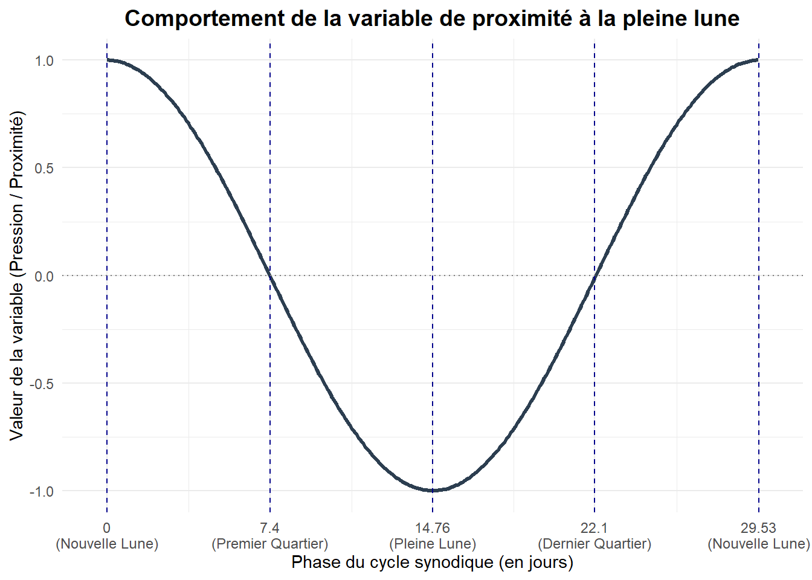
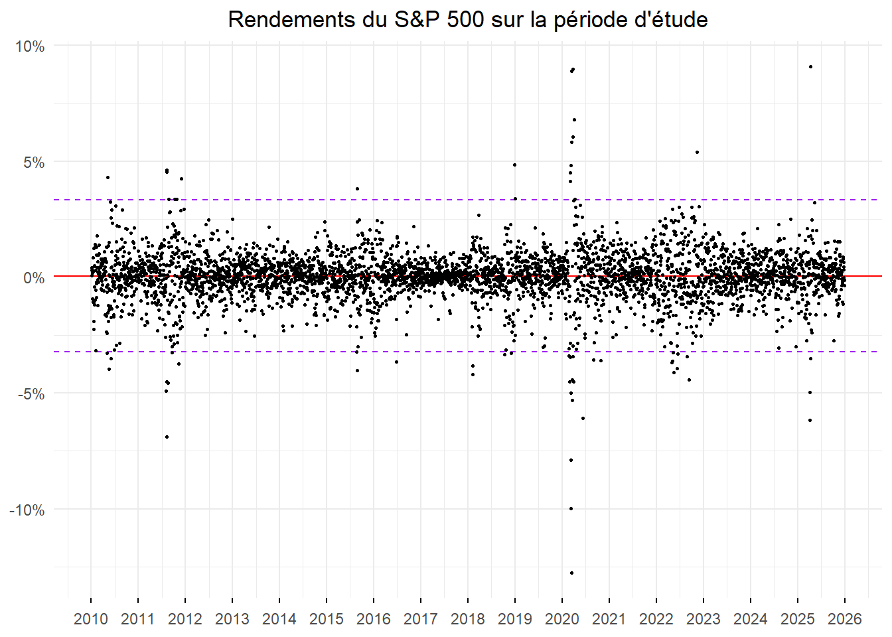
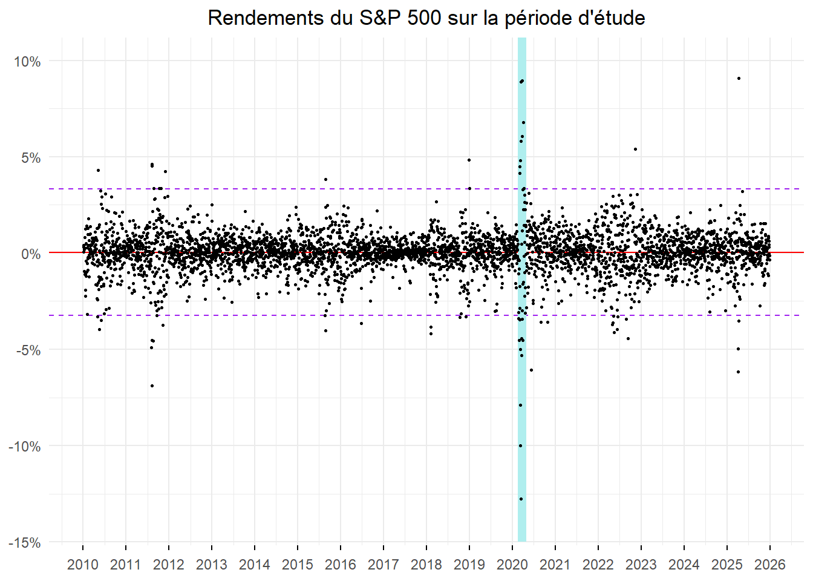
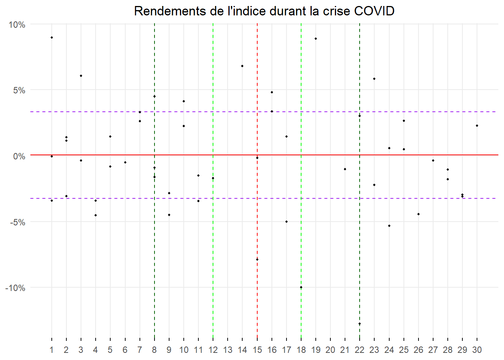
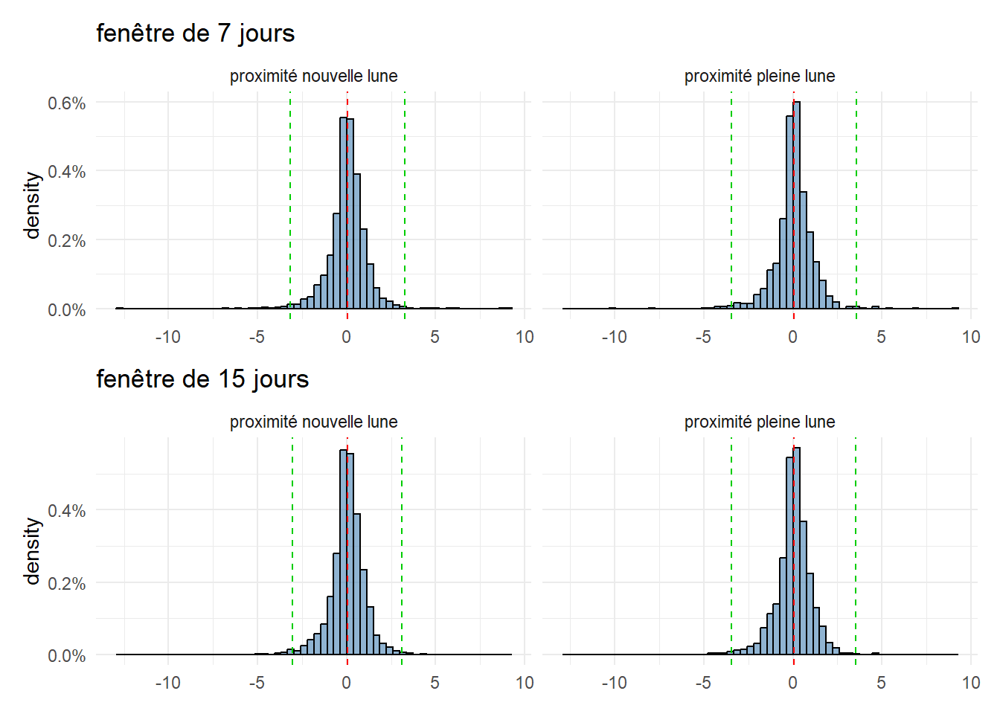
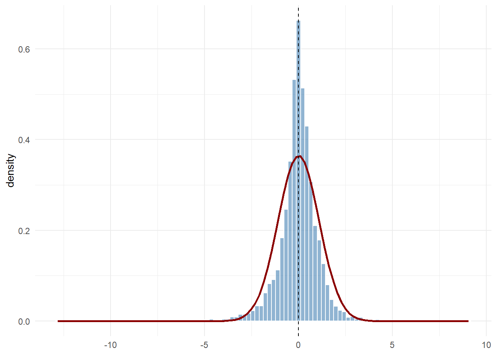
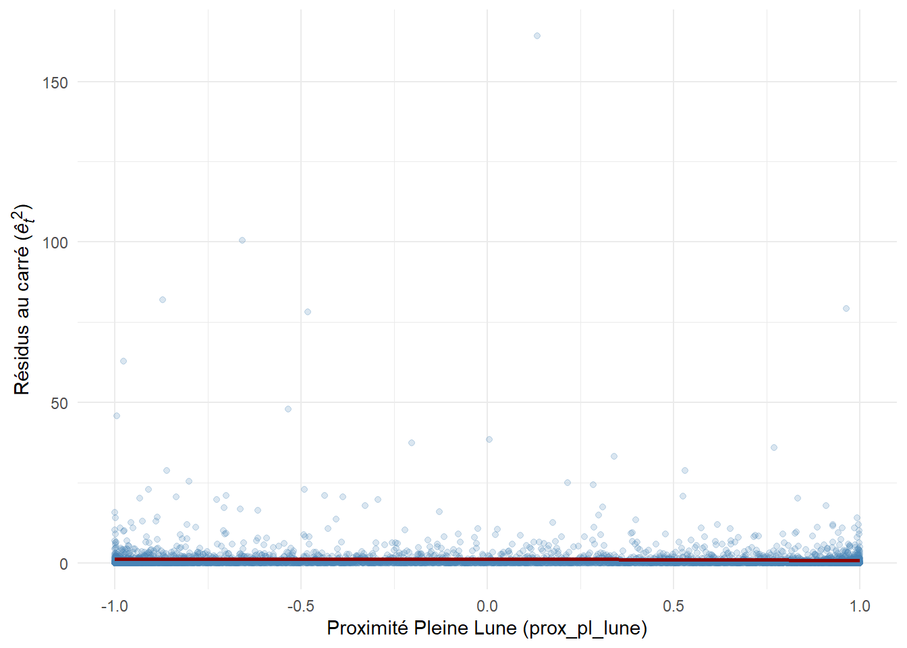
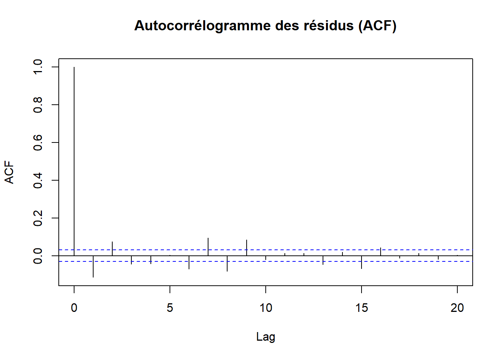
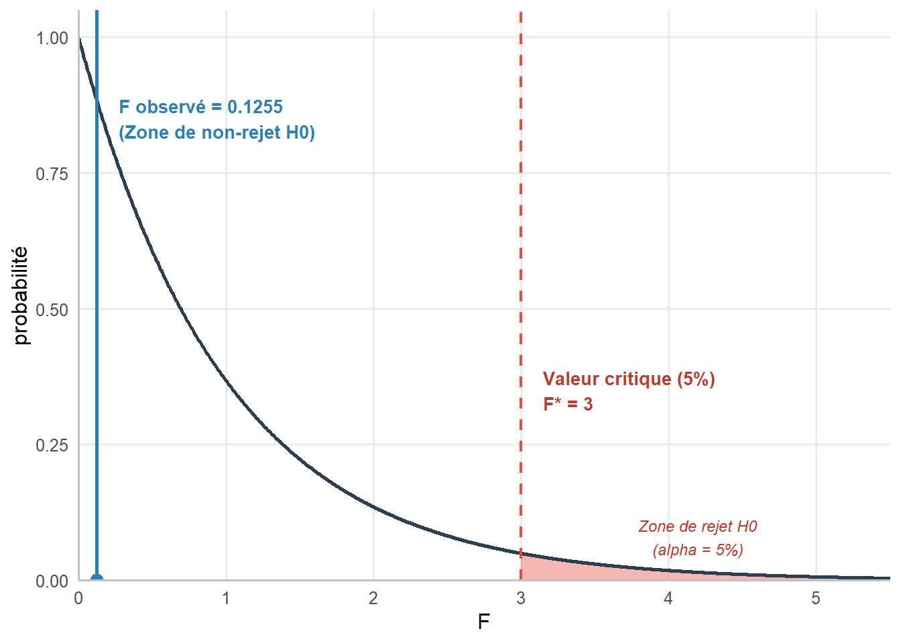

library(tidyverse)
library(gt)
library(ggtext)
library(patchwork)Séance 2 : Cycles lunaires (Séries Temporelles)
Intéressons-nous maintenant à des données financières, plus spécifiquement à celles issues des processus de cotation d’actifs sur les marchés dédiés. Travaillons à partir de séries chronologiques de prix qui en sont issus. Celles-ci correspondent pour un titre donné aux prix attribués de manière régulière, de date à date, sur une périodicité définie via un mécanisme de rencontre de l’offre et de la demande. Cela nous permettra de nous pencher sur un débat théorique fondamental qui a animé la communauté des chercheurs en Finance sur prés de deux décennies entre 1980 et 2000. Celui-ci se résume à la question suivante : Les marchés financiers sont-ils efficients ou les décisions prises sur ces derniers sont-ils affectées par les biais comportementaux des agents qui les animent ?
Les tenants de la première théorie, l’efficience des marchés financiers, au premier rang desquels on trouve Eugene Fama, postulent des individus rationnels qui agissent sur les marchés en fonction de la survenue d’informations affectant la valeur fondamentale des titres qui elle-même est définie par leurs anticipations. Si les coûts de transactions sont raisonnables, dans la mesure où ils ne limitent pas excessivement les arbitrages, les cours des titres, et notamment ceux des actions, ne devraient varier qu’en fonction de la survenue de nouvelles informations pertinentes concernant les revenus futurs procurés par leur détention. Or, celles-ci ne surviennent qu’au hasard des évènements animant la vie économique. Si ces évènements sont prévisibles, ils sont anticipés et l’information les concernant est déjà intégrée dans les prix. Il en résulte que l’évolution des cours des titres suive une marche aléatoire, qu’elle soit par nature imprévisible, et que, par conséquence, il ne soit possible pour aucun agent de battre durablement le marché. La théorie de l’efficience établie ainsi qu’aucune stratégie, qu’aucun acteur, ne puisse durablement réaliser une performance plus importante que celle du portefeuille de marché sans prendre plus de risques que celui inhérent à ce même portefeuille.
Les tenants de la seconde théorie, la finance comportementale, au premier rang desquels on trouve Richard Thaler et Robert Shiller, postulent l’existence de biais systématiques chez les individus aussi bien dans la perception des informations, leur traitement et des actions prises en conséquences. Il s’agit d’une forme de retour sur le postulat de rationalité des opérateurs introduisant une dimension psychologique réaliste dans l’analyse des décisions prises. L’évolution des prix de marchés ne reflète alors pas uniquement l’évolution de la valeur fondamentale des actifs (la valeur actuelle des flux futurs que leur possession est susceptible de générer estimée compte tenu de l’information disponible). Un certain nombre de mouvements de marchés qui auraient dû faire l’objet d’arbitrages persistent (même si les coûts de transactions sont très bas). Ils produisent des phénomènes qualifiés un temps d’exubérances irrationnelles (sur-volatilité, formation de bulles…), mais aussi ils ouvrent la voie à la mise en place de stratégies basées sur des anomalies au regard de l’efficience permettant un temps, dans une certaine mesure, de battre le marché (faire des gains sans prendre de risque jusqu’à ce que l’anomalie ciblée disparaisse).
Parmi elles, les anomalies calendaires ont joué un rôle particulier dans le débat qui a opposé la théorie de l’efficience des marchés financiers et la finance comportementale. Leur mise en évidence a permis, dés les années 80, d’ouvrir le débat. Mais de quoi s’agit-il ? Ce sont simplement les marques de la présence d’une forme de saisonnalité affectant l’évolution des cours des actifs. La régularité du phénomène intervenant quasi systématiquement à chaque même échéance devrait donner lieu à des opérations d’arbitrage qui devraient rapidement les faire disparaître. Il s’agit d’une occasion pour les agents qui les réaliseraient de générer des gains sans s’exposer à aucun risque. Elles ne devraient donc pas exister. Or, certaines de ces anomalies persistent, ou ont persisté bien trop longtemps après leur découverte pour qu’il en soit aussi. Plus dérangeant encore vis-à-vis de l’efficience, elles entraînent des mouvements de cours sans qu’aucune nouvelle information ne soit révélée.
La première de ces anomalies documentées par la littérature fut l’effet weekend (ou effet Lundi) mis en avant par French (1980) . Il s’agit d’une tendance pour les rendements boursiers à être en moyenne plus élevés les vendredis et moins élevés les lundi par rapport aux autres jours de la semaine. On a également l’effet vacance mis en avant par ARIEL (1990) . Il s’agit d’une tendance pour les rendements boursiers à être en moyenne plus élevés les veilles de vacances que les autres jours. Les veilles de vacances correspondent aux jours précédant une fermeture de marché supérieure à celle associée à un weekend. Il y a encore l’effet fin et début de mois (turn of the month) mis en avant par Ariel (1987) . Celui-ci marque le fait qu’en moyenne les rendements boursiers soient plus importants au tout début du mois et en fin de mois comparativement aux autres jours. Thaler (1987) met en évidence l’effet janvier, mois qui sur les marchés US présente de manière régulière des rendements anormalement élevés. Bouman and Jacobsen (2002) , dans le même esprit, relèvent un comportement cyclique des marchés allant dans le sens de périodes haussières plus fréquentes entre le mois septembre (voir octobre) d’une année et le mois de mai de l’année qui suit. Ils valident ainsi l’adage “sell in may and go away”. [Si vous êtes curieux, vous pouvez consulter une série de post de blog détaillant la manière dont ces anomalies peuvent être testées sous R ici]
Plus récemment, des travaux se sont attachés à mettre en avant des anomalies encore plus étranges au regard de la rationalité des opérateurs et de l’efficience des marchés au point que l’on qualifie ces anomalies d’exotiques. C’est sur l’une d’entre-elles que nous travaillerons. Il s’agit de la tendance des rendements des actions à être plus faibles autour de la pleine lune et plus importants autour de la nouvelle lune. Cela a été mis en évidence sur les marchés actions des Etats-Unis par Dichev and Janes (2001) ainsi que sur de nombreux autres marchés au travers le monde par K. Yuan, Zheng, and Zhu (2006) et Keef and Khaled (2011) à la fois à partir d’indice pondérés et non pondérés. La justification avancée pour cette anomalie est que le cycle lunaire affecterait l’humeur des investisseurs. En période de pleine lune, ils auraient moins tendance à être optimistes que pendant les autres phases du cycle comme la nouvelle lune. Il en résulterait des évaluations moins optimistes de la valeurs des titres négociés. Cela se matérialiserait par des rendements, en moyenne, moins importants à proximité de la pleine lune qu’à proximité de la nouvelle lune.
Sur la base du même type de mécanisme d’autres anomalies ont été documentées. On les distingue généralement en fonction du type de fait générateurs présumés à l’origine des changements d’humeur des investisseurs qui provoquent les distorsions de cours constatés. Il est ainsi courant de qualifier d’environnementales les anomalies générées par des mécanismes biologiques, ou simplement en liens avec la nature, et d’évènementiels les anomalies générées par des phénomènes sociaux et culturels. Malgré une certaine régularité des évènements les caractérisants les sources de nombre de ces anomalies, on rejette pour elles le qualificatif de calendaire qui reste réserver aux seuls phénomènes dont la dimension temporelle est la principale et colle avec des mécanismes associé au fonctionnement des marchés sans aller au-delà. La table 1, ci-contre, présente une série de travaux ayant mis en évidence ces différentes anomalies (calendaires inclus). Même s’il est loin d’être exhaustif, il donne un aperçu assez large de cette littérature et pointe les papiers clés.
Table 1 : Typologie des anomalies de marché
| Catégorie | Anomalie | Papier(s) clé(s) | Mécanisme sous-jacent | Effet constaté sur les cours |
| 1. Calendaires (Lien au temps pur / structures de marché) | Effet Janvier (January Effect) | Rozeff and Kinney (1976) ; Wachtel (1942) | Optimisation fiscale en décembre (tax-loss selling) suivie de rachats en janvier, combinée aux flux de bonus de fin d’année. | Surperformance significative des actions (en particulier les petites capitalisations) au mois de janvier. |
| Effet Lundi / Jour de la semaine (Weekend Effect) | French (1980) ; Gibbons and Hess (1981) | Accumulation des mauvaises nouvelles pendant le weekend, biais de décision du lundi matin, fermeture/ouverture des carnets d’ordres. | Rendements moyens du lundi négatifs ou inférieurs aux autres jours de la semaine. | |
| Tournant du mois (Turn-of-the-month) | Ariel (1987) ; Lakonishok and Smidt (1988) | Concentration des flux de liquidités institutionnels (salaires, retraites, rééquilibrage de portefeuilles) au dernier et premier jour du mois. | Rendements boursiers concentrés quasi exclusivement sur le dernier jour et les 3-4 premiers jours du mois. | |
| Sell in May and Go Away (Halloween Effect) | Bouman and Jacobsen (2002) | Facteurs structurels, baisse de liquidité en été (vacances des traders), réallocations fiscales/institutionnelles mi-année. | Rendements nettement plus élevés sur la période novembre-avril que sur la période mai-octobre. | |
| 2. Environnementales (Lien à la biologie / nature) | Durée du jour / Dépression saisonnière (SAD Effect) | Kamstra, Kramer, and Levi (2003) | La baisse de la lumière du jour en automne/hiver accroît le Trouble Affectif Saisonnier (TAS), augmentant l’aversion au risque des investisseurs. | Pression baissière sur les actions au fur et à mesure que les jours raccourcissent ; rebond au solstice d’hiver. |
| Ensoleillement (Sunshine Anomaly) | Saunders (1993) ; Hirshleifer and Shumway (2003) | L’exposition au soleil améliore l’humeur (psychological mood effect) et incite à un optimisme irrationnel dans les décisions financières. | Rendements journaliers significativement plus élevés les jours ensoleillés à la bourse locale. | |
| Phases de la Lune (Lunar Phase Effect) | K. Yuan, Zheng, and Zhu (2006) | Impact de la luminosité lunaire sur le sommeil (mélatonine) et l’humeur, générant un pessimisme accru autour de la pleine lune. | Rendements boursiers significativement plus élevés autour de la nouvelle lune qu’autour de la pleine lune. | |
| Pollution de l’air (Air Pollution Effect) | Levy and Yagil (2011) ; Heyes, Neidell, and Saberian (2016) | Les particules fines (\(PM_{2.5}\)) et l’ozone réduisent la capacité cognitive, augmentent la dépression et l’aversion au risque. | Baisse des rendements boursiers et chute des transactions/liquidité les jours de forte pollution. | |
| Changement d’heure (Daylight Saving Anomaly) | Kamstra, Kramer, and Levi (2000) | La désynchronisation du rythme circadien (perte de 1h de sommeil au printemps) altère l’humeur et la capacité de prise de décision. | Rendements fortement négatifs le lundi suivant le passage à l’heure d’été. | |
| 3. Événementielles & Sociales (Chocs d’humeur & culture) | Sentiment religieux / Fêtes | Białkowski, Etebari, and Wisniewski (2012) (Ramadan); Laura Frieder and Subrahmanyam (2004) (Fêtes Juives); T. Yuan and Gupta (2014) (Nouvel An Chinois) | Les célébrations religieuses majeures induisent une hausse de la cohésion sociale, du pardon ou du sentiment d’augure, générant un choc d’optimisme collectif. | Rendements anormaux positifs élevés et baisse de la volatilité durant le Ramadan ou le Nouvel An Chinois. |
| Chocs sportifs (Sports Sentiment) | EDMANS, GARCÍA, and NORLI (2007) | Choc d’humeur asymétrique fort suite aux compétitions internationales (Coupe du Monde) impactant l’état psychologique des investisseurs locaux. | Baisse significative de la bourse nationale le lendemain d’une élimination/défaite de l’équipe nationale. | |
| Cycle présidentiel / Élections | Santa-Clara and Valkanov (2003) | Incertitude politique et budgétaire en début de mandat, suivie de politiques de relance économiques ciblées avant les réélections. | Surperformance historique de la 3ᵉ et 4ᵉ année du mandat présidentiel américain par rapport aux deux premières. |
Globalement, les études récentes sur ce pool d’anomalies exotiques (environnementale ou événementiels) montrent qu’elles ont tendance à s’effacer dès lors que l’incertitude devient importante notamment suite à un choc sur les marchés (Kim and Shamsuddin 2023).
Mais revenons sur celle qui nous intéresse dans le cadre de ce cours, celle associée aux différentes phases de la Lune. L’idée sera ici de tester nous même l’existence de l’anomalie sur un échantillon de données. En l’occurrence, nous utiliserons l’indice Standard & Poor 500 sur la période courant de début janvier 2010 à fin décembre 2025. Avant d’aller plus loin préparons notre environnement de travail de manière à nous assurer que l’ensemble des packages mobilisées (et surtout leur fonction) y seront bien disponibles.
📦 Packages mobilisés
Pour simplifier les choses, limitons le nombre de packages que nous appellerons totalement dans notre environnement de travail : le tidyverse, gt, ggtext et patckwork. Concernant les autres, nous procéderons par appel fonction par fonction (via ::). Procédons donc à partir de la commande library().
Le chargement du package conduit à la production d’un certain nombre de messages standards. Pour le tidyverse, vous avez la liste des packages inclus et les conflits de fonctions avec leur règlement. Pour éviter, l’affichage de ses éléments d’information, vous pouvez, comme je l’ai fait ici (mais que vous ne pouvez pas voir), inclure dans votre chunk code (morceau de code) des commandes préalables via la chaîne de caractères #| . J’ai indiqué message: false et warning: false. Chaque commande préalable prend une ligne qui débute pas la #|.
Ceci étant fait intéressons-nous aux données.
Obtenir les données
Pour tester la théorie développée précédemment (rendement moins important en moyenne à proximité des pleines lunes que des nouvelles lunes), nous avons besoin de deux types de données : des prix de marché et des mesures positionnant les observations en fonction des phases de lune. Concernant les premiers, retenons le Standard & Poor 500 . Il s’agit du principal indice actions des marchés des US. C’est un indice pondérée par les capitalisations et qui n’inclue pas les dividendes.
Utilisons la fonction tq_get() du package tidyquant pour obtenir les données le concernant sur notre période l’intérêt (début janvier 2010 à fin décembre 2025). On trouve des informations à sont sujet assez facilement en ligne. La solution adoptée ici n’est qu’une parmi beaucoup d’autres aboutissant au même résultat. L’avantage de celle-ci est d’obtenir directement les données sous la forme d’une tibble ce qui permet de les manipuler très facilement via les commandes du tidyverse par la suite.
tq_get() utilisée pour les cours d’actifs réalise une requête API sur les serveurs de Yahoo Finance. C’est donc à partir de leur données que nous travaillerons. Voyons ce que cela donne.
df_sp500 <- tidyquant::tq_get("^GSPC",from = "2010-01-01", to = "2025-12-31")
head(df_sp500)# A tibble: 6 × 8
symbol date open high low close volume adjusted
<chr> <date> <dbl> <dbl> <dbl> <dbl> <dbl> <dbl>
1 ^GSPC 2010-01-04 1117. 1134. 1117. 1133. 3991400000 1133.
2 ^GSPC 2010-01-05 1133. 1137. 1130. 1137. 2491020000 1137.
3 ^GSPC 2010-01-06 1136. 1139. 1134. 1137. 4972660000 1137.
4 ^GSPC 2010-01-07 1136. 1142. 1131. 1142. 5270680000 1142.
5 ^GSPC 2010-01-08 1141. 1145. 1136. 1145. 4389590000 1145.
6 ^GSPC 2010-01-11 1146. 1150. 1142. 1147. 4255780000 1147.Il a bien trop d’informations par rapport à ce dont nous avons réellement besoin. Les cours d’ouverture, plus haut et plus bas de séances ne nous intéresse pas à ce stade, ni même les volumes échangés. Ce qui nous est réellement utile à ce stade, ce sont les date de cotation, qui nous permettront de positionner les observations par rapport au cycle lunaire, et le cours ajusté, qui n’est autre que le cours de clôture corrigé pour neutraliser les évolutions uniquement associées aux opérations jouant mécaniquement sur le nombre d’actions.
Passons maintenant aux données concernant les phases de la lune. Pour cela, utilisons la fonction lunar.phase() du package lunar. Celle-ci donne pour un jour désigné la phase du cycle lunaire correspondant exprimée en radians (pour rappel, c’est une mesure d’angle exprimée en base π et pour laquelle ouverture maximum, 360°, est 2.π). Il s’agit simplement de l’angle formé par l’alignement Soleil-Terre-Lune. Il pemet d’exprimer la position relative de la lune sur son orbite autour de la terre (qui dure 29,53 jours). La nouvelle lune correspond ainsi à un angle de 0, le premier quartier à un angle de \(\pi/2\) (autour de 1,57), la pleine pleine lune à un angle de \(\pi\) (autour de 3,14) et le dernier quartier à un angle de \(\frac{3.\pi}{2}\) (autour de 4,71).
Afin de facilité la suite (notamment le croisement avec les données de cours de l’indice), assemblons l’extraction sous la forme d’une data frame à deux colonnes: une pour la date du jour de cotation considéré et une pour l’angle. La fonction lunar.phase() comprend deux arguments : la date et l’heure à laquelle la mesure est opérée via la argument shift. Sa valeur par défaut est 0. Cela correspond à un positionnement de la lune établi à 12 heures temps universel. Gardons cette référence.
Elle inclut un léger bruit dans les données. Pour certaines observations, lorsque nous associerons l’indication de l’angle avec le jour du cycle lunaire, nous pouvons avoir un léger décalage par rapport à la date du cours de l’indice. Néanmoins, il y a ici rien de systématique qui serait de susceptible de générer un biais. Nous y reviendrons. Chargeons et visualisons les données.
df_lune<-data.frame(date=df_sp500$date,
lunar_rad=lunar::lunar.phase(df_sp500$date,shift = 0))
head(df_lune) date lunar_rad
1 2010-01-04 3.965492
2 2010-01-05 4.178261
3 2010-01-06 4.391029
4 2010-01-07 4.603798
5 2010-01-08 4.816567
6 2010-01-11 5.454873Maintenant que nous avons l’ensemble des données (nos deux data frame), nous pouvons les fusionner avant de les retravailler afin de les rendre opérationnelles pour les besoins de notre étude.
Dans la mesure où nous n’avons plus besoin des deux data frame issues des extractions, supprimons-les. Ne gardons que df.
rm(df_sp500,df_lune)Mise en forme des données
Passons maintenant à la mise en forme des données pour l’analyse. En effet, nous ne travaillerons pas directement à partir des valeurs de l’indice et des arcs d’angle de la lune mais à partir des rendements journaliers et d’indicateurs de position des observations dans le cycle lunaire. On utilisera ainsi par exemple les jours du mois lunaire ou encore l’appartenance du jours désignée à une période définie du cycle . Mais, nous y reviendrons.
Commençons par calculer les rendements journaliers de l’indice. Optons ici pour les rendements continues (log-returns). Ceux-ci prennent la forme suivante pour l’actif i sur la période courant entre t-1 et t:
\[r_{t}=ln(\frac{P_{t}}{P_{t-1}})\]
où r est le rendement et P est le prix de l’actif.
Ce choix présente plusieurs avantages par rapport aux rendements discrets que l’on calcul à partir de la formule suivante:
\[rd_t=\frac{P_t-P_{t-1}}{P_{t-1}}=\frac{P_t}{P_{t-1}}-1\]
Tout d’abord, l’additivité des logs simplifie énormément les calcules. Pour obtenir un prix à un moment données à partir d’un prix initial et d’une série de rendements, avec les rendements continus, il suffit de procéder à l’addition de ces derniers et de l’appliquer pour la composition continue du prix initiale. On a ainsi:
\[P_{t_n}=P_0 \times e^{\sum_{t=1}^{n} r_t}\]
Pour les rendements discrets, faute d’additivité, la procédure est plus fastidieuse. Il faut enchaîner les produits pour aboutir à la valeur finale cible. On a ainsi:
\[P_{t_n}=P_0 \times (1+rd_1) \times (1+rd_2)... \times (1+rd_{t_n})\]
Les choses sont encore plus marquantes lorsqu’il s’agit d’opérer le même type de calculs à partir de rendements moyens. Pour les rendements continues, la moyenne arithmétique de ces mêmes rendements peut être mobilisée pour établir le prix à la date déterminée. On a ainsi :
\[\bar{r}_A=\frac{1}{n}\sum_{t=1}^n r_t\]
\[P_{t_n}=P_0\times e^{n.\bar{r}_A}\]
Pour les rendements discret, il faut utiliser le moyenne géométrique des facteurs de croissance, (\(1+rd_t\)), associés à ces mêmes rendements, ce qui est un peu plus laborieux. On a ainsi :
\[\bar{r}_G=\sqrt[n]{ \prod_{t=1}^{n}(1+rd_t)}-1\]
\[P_{t_n}=P_{0}\times(1+\bar{r}_G)^n\]
Dans la suite de ce cours, afin de ne pas alourdir les équations, \(\bar{r}\) désignera systématiquement la moyenne arithmétique des rendements continus (des log-returns).
Pourquoi privilégier les rendements continus ?
En passant aux log-returns, la propriété fondamentale des logarithmes transforme le produit des facteurs de croissance en une simple somme :
$$r_{0,n} = \sum_{t=1}^n r_t \quad \implies \quad \bar{r} = \frac{1}{n} \sum_{t=1}^n r_t$$
Plus de produit, plus de racine \(n\)-ième, plus de \(-1\) à ajouter ou retrancher : la moyenne temporelle d’un rendement continu n’est rien d’autre qu’une moyenne arithmétique classique. C’est cette propriété d’additivité qui rend les log-returns immensément plus pratiques.
Mais avant d’aller plus loin, appréhendons les notions abordées précédemment au travers de deux applications rapides.
Un autre avantage de les rendements continus (log-returns) est que leur distribution suit bien plus facilement une loi normale. En effet, les prix des actifs ne pouvant pas être négatif du fait de la responsabilité limité des porteurs. Les rendements discrets sont par nature bornée à -1. Au delà d’une chute de prix de 100%, le prix deviendrait négatif. Hors, le domaine de définition de la loi normale est borné entre plus et moins l’infini. Ce problème n’existe pas pour les rendements continus. Quand le prix tend vers 0, le rendement continu tend vers moins l’infini puisque [log(0)->\(-\infty\)]. Cette particularité permet d’utiliser de manière plus judicieuses les tests statistiques paramétriques qui demande aux variables testées de suivre une loi normale (test de Student, test de Fisher, dans une certaine mesure les régressions via les MCO…).
Pour ces raisons, lorsque l’on traite de séries temporelles de prix, il est courant de travailler à partir de rendements continus qui sont bien plus pratiques à manipuler. Les rendements discrets sont généralement réservés aux applications conçues autour des coupes transversales.
Mais revenons à nos données. Calculons les rendements (continus) de l’indice et veillons à ne garder que les informations utiles. Une fois les rendements calculés, la valeur de l’indice ne sert plus à rien, supprimons-la. Par ailleurs, la première ligne produit une missing value (NA, Not Available), supprimons-la également.
df<-df |>
mutate(ret=log(SP500/lag(SP500))*100, .after=date) |>
select(-SP500) |>
filter(!is.na(ret))
head(df)# A tibble: 6 × 3
date ret lunar_rad
<date> <dbl> <dbl>
1 2010-01-05 0.311 4.18
2 2010-01-06 0.0545 4.39
3 2010-01-07 0.399 4.60
4 2010-01-08 0.288 4.82
5 2010-01-11 0.175 5.45
6 2010-01-12 -0.943 5.67Veillons maintenant à positionner les jours de cotation vis-à-vis du cycle lunaire de manière un peu plus compréhensible qu’à partir de l’angle terre-soleil-lune. Commençons par positionner chaque observation dans le jours du cycle lunaire correspondant. Par rappel, le cycle lunaire, ou mois lunaire, dure 29,53059 jours ce qui crée un décalage avec le mois calendaire. Ici, pour facilité les choses pour la suite, nous nommerons le mois lunaire à 30 jours. Pour cela, procédons en deux étapes. Tout d’abord, nous établirons une mesure de positionnement en jours et fraction de jours à partir de la mesure d’angle. Pour cela, nous divisons l’angle constaté par la valeur d’angle d’un cycle complet (\(2\pi\)). On a alors la proportion du cycle parcouru à la date désignée. Puis, nous la passons en nombre de jours en la multipliant par la durée du mois lunaire en jours (29,53059 jours). Enfin, nous ajoutons 1 pour que le début du mois soit le jour 1 et non le jour 0. Ensuite, nous arrondissons la valeur obtenue à l’entier inférieur de manière à obtenir un nombre entre 1, le premier jour du mois lunaire, et 30, le dernier jour du mois lunaire.
duree_mois_lunaire <- 29.53059
df<-df |> mutate(
# passer sur une échelle en jours
jour_lunaire_continu = (lunar_rad / (2 * pi)) * duree_mois_lunaire +1,
# On arrondit à l'entier inférieur pour avoir des "classes" de jours
# (Jour 1, Jour 2...)
jour_lunaire = floor(jour_lunaire_continu))
rm(duree_mois_lunaire)
head(df)# A tibble: 6 × 5
date ret lunar_rad jour_lunaire_continu jour_lunaire
<date> <dbl> <dbl> <dbl> <dbl>
1 2010-01-05 0.311 4.18 20.6 20
2 2010-01-06 0.0545 4.39 21.6 21
3 2010-01-07 0.399 4.60 22.6 22
4 2010-01-08 0.288 4.82 23.6 23
5 2010-01-11 0.175 5.45 26.6 26
6 2010-01-12 -0.943 5.67 27.6 27Vérifions que l’opération a bien permis de n’avoir que des valeurs entières comprises entre 1 et 30 pour la variable jour_lunaire.
unique(df$jour_lunaire) |>
sort() [1] 1 2 3 4 5 6 7 8 9 10 11 12 13 14 15 16 17 18 19 20 21 22 23 24 25
[26] 26 27 28 29 30C’est bien la cas. Notez que si nos manipulation ont, pour certaines observations rares, créé un décalage avec la réalité celui-ci reste marginale et répartie au hasard. Cela ne devrait pas affecter outre mesure les tests qui vont suivre (juste potentiellement augmenter très très légèrement la variance des effets mesurés).
Mais notre hypothèse ne porte pas sur l’effet d’un jours lunaire particulier sur les rendements des actifs. Elle portent sur des périodes du mois lunaire où ces mêmes rendements seraient en moyenne plus ou moins importants (moins important à proximité de la pleine lune et plus important à proximité de la nouvelle).
Pour marquer ces périodes, afin d’assurer la comparaison, créons deux variables binaire considérant chacune une distance à la pleine lune différente plus ou moins importante (tant avant qu’après de manière symétrique). Pour la première, retenons une période de 7 jours : trois avant la pleine lune (le jours 12), le jours de la pleine lune (le jours 15) et trois jours après celle-ci (le jours 18). Nommons la pleine_lune_7. Pour la seconde, que l’on construira sur le même modèle, retenons une période de 15 jours. Nommons la pleine_lune_15.
Ce découpage est correspond à celui proposé par K. Yuan, Zheng, and Zhu (2006) . Ces auteurs ne s’arrêtent néanmoins pas là. Ils proposent de compléter l’analyse en mobilisant également une mesure continue de la distance à la pleine lune. Cela leur permet de répondre à la question de l’effet du découpage potentiellement arbitraire des périodes considérées comme proche de la pleine lune sur les conclusions de l’analyse. Pour rappel, ces périodes devraient présenter des rendements plus faibles que les périodes opposées considérées comme éloignées de la pleine lune (proches de la nouvelle lune).
Ils font cela en retenant une approche trigonométrique bâtie à partir du jours du mois lunaire exprimé de manière continue. La mesure prend alors la forme suivante:
\[ cos(2\pi \times \frac{jours.lunaire.continu}{29.53059})\]
Le premier élément est l’indication de l’avancée du cycle lunaire correspondant au jours considéré (\(\frac{jours.lunaire.continu}{29,5709}\)). Cette élément est alors passé en radians en le multipliant par \(2\pi\) . Cette mesure d’angle est alors passée au cosinus pour avoir in fine la mesure de distance à la pleine lune. Celle-ci est comprise entre -1 et 1. 1 correspond au début du cycle, la nouvelle lune. -1 correspond à la pleine lune, le milieu du cycle. Afin de mieux visualiser les choses, traçons la fonction correspondant.
tibble(jour_synodique = seq(0, 29.53059, by = 0.1)) |>
mutate(proximite_lune = cos(2 * pi * jour_synodique / 29.53059)) |>
ggplot( aes(x = jour_synodique)) +
geom_line(aes(y = proximite_lune),color = "#2c3e50", linewidth = 1.2) +
geom_vline(xintercept=c(0,7.4,14.76,22.1,29.53059),
color="darkblue",linewidth = 0.4,linetype="dashed") +
geom_hline(yintercept = 0, linetype = "dotted", color = "grey50") +
scale_x_continuous(breaks = c(0, 7.4, 14.76, 22.1, 29.53),
labels = c("0\n(Nouvelle Lune)",
"7.4\n(Premier Quartier)",
"14.76\n(Pleine Lune)",
"22.1\n(Dernier Quartier)",
"29.53\n(Nouvelle Lune)")) +
labs(title = "Comportement de la variable de proximité à la pleine lune",
x = "Phase du cycle synodique (en jours)",
y = "Valeur de la variable (Pression / Proximité)") +
coord_cartesian(xlim=c(-0.5,30))+
theme_minimal() +
theme(plot.title = element_text(face = "bold", size = 14, hjust=0.5),
axis.text.x = element_text(size = 9, vjust = 0.5))
Elle est clairement non linaire et plus sa valeur est petite, plus on se rapproche de la plaine lune. La prédiction que l’on cherchera à tester avec cette variable est donc qu’elle serait positivement corrélée avec les rendements. Plus on se rapproche de la pleine lune, plus la mesure tend vers -1 et plus les rendements devraient être faibles. Plus on se rapproche de la nouvelle lune, plus la mesure tend ver 1 et plus les rendements devraient être importants.
Maintenant que l’on a nos deux variables continues de distance à la pleine lune, on peut être tenter de les comparer de manière à mieux comprendre leur différences et leur point commun. Faisons-le à partir d’un simple graphe.
On voit clairement que les deux variables prennent les mêmes valeurs aux points remarquables : la nouvelle lune, le premier quartier, la pleine lune et le troisième quartier. Ce qui les différencie nettement c’est la vitesse pour atteindre ces points. Elle est constante pour la version linéaire et connait des phases d’évolution lentes et plus rapide pour la version non linéaire.
Nous avons maintenant l’ensemble des variables de base nécessaire à l’analyse. Passons donc à la suite.
Exploration des données
Avant de se lancer dans les tests statistiques à proprement parler, il est toujours intéressant de bien comprendre la forme que prend les données de l’échantillon sur lequel on travail. Pour ce faire, générons quelques éléments de statistiques descriptives ainsi que quelques graphes permettant d’avoir un aperçu de la situation.
Les rendements de l’indice S&P 500
Commençons par nous intéresser à notre variable expliquée : les rendements de l’indice S&P 500 sur la période d’étude. Établissons une série de statistiques descriptives de leur distribution (minimum, premier quartile, médiane, troisième quartile, maximum, moyenne, écart-type, skewness et kurtosis).
df |>
summarise(minimum=min(ret),
prem_quartile=quantile(ret, prob=0.25),
mediane=median(ret),
trois_quartile=quantile(ret,prob=0.75),
maximum=max(ret),
moyenne=mean(ret),
ecart_type=sd(ret),
skewness=moments::skewness(ret),
kurtosis=moments::kurtosis(ret)) |>
gt::gt() |>
gt::fmt_number( decimals = 3)| minimum | prem_quartile | mediane | trois_quartile | maximum | moyenne | ecart_type | skewness | kurtosis |
|---|---|---|---|---|---|---|---|---|
| −12.765 | −0.381 | 0.070 | 0.568 | 9.089 | 0.045 | 1.094 | −0.615 | 16.556 |
La première chose que l’on remarque clairement est que l’on est fasse à une distribution asymétrique. Le décalage entre la moyenne et la médiane est relativement important (0,045% vs . 0,07% mais on reste proche de 0). Ce point est confirmé par la skewness négative. La distribution est étalée vers les valeurs faibles. D’ailleurs le minimum est très petit -12,76% ce qui clairement une valeur extrême. La kurtosis, avec une valeur de 16,55, en surplus confirme la présence de ce type de valeur bien au-delà de ce que suppose une loi normale (3).
Mais tous cela peut apparaître un peu abstrait. Visualisons la distribution afin d’avoir une idée plus contraire de la chose.
Le graphe confirme ce que les statistiques descriptives pointées. On est dans un contexte où la normalité des rendements peut être discuté notamment du fait de la présence valeurs extrêmes. Cela appel à des investigations complémentaires.
Pour ce faire, intéressons-nous à la répartition dans le temps des rendements. Traçons la répartition dans le temps des rendements journaliers et voyons si sur la période d’observation l’indice n’aurait pas traversé une ou plusieurs séquences caractérisées par des niveaux de volatilité bien supérieurs à ceux rencontrés habituellement.
ggplot(data=df,aes(x=date,y=ret))+
geom_hline(yintercept = mean(df$ret), color='red')+
geom_hline(yintercept = c(mean(df$ret)+3*sd(df$ret),
mean(df$ret)-3*sd(df$ret)),
linetype="dashed",color="purple")+
geom_point(size=0.6)+
labs(title="Rendements du S&P 500 sur la période d'étude")+
scale_x_date(date_breaks="years",date_labels = "%Y")+
scale_y_continuous(labels = scales::label_percent(scale=1)) +
theme_minimal()+
theme(plot.title=element_text(hjust=0.5),
axis.title = element_blank(),
axis.ticks.x = element_line(color='black'))
Les observations situées au dessus ou en dessous des pointillés violets sont, sous l’hypothèse de normalité des rendements, des outliers (des observations atypiques). Il s’écartent de la moyenne de plus de 3 écart-types. Cela ne devrait arriver que dans 0,27% des cas et se répartir au hasard. Sur une période de 15 ans comme celle couvrant l’échantillon cela devrait arriver 9 à 12 fois. Hors, on voit bien que ces observations sont bien plus nombreuses et qu’elles se concentrent sur certaines périodes. La plus spectaculaire d’entre-elles est celle située début 2020. Il s’agit de la crise du COVID 19 et plus particulièrement de ce qui entour l’annonce en mars de cette même année de la mise en place de mesures de confinement.
Lors de l’analyse, il sera important de veiller à bien comprendre l’impact de cette période particulière sur les résultats obtenus (dans un sens comme dans un autre).
Note
La crise COVID sur les marchés financiers
Les marchés ne réagissent pas immédiatement à l’émergence de l’épidémie en Chine en janvier 2020. C’est fin février que tous bascule pour eux. Entre le 21 et 23 février, l’Italie isole ses premières villes du Nord. Ce n’est plus un problème local chinois, mais une menace claire pour les chaînes d’approvisionnement mondiales. Le 8 mars, l’OPEP et la Russie n’arrivent pas à s’entendre sur une baisse de production. L’Arabie Saoudite lance une guerre des prix. Cela crée un choc de liquidité sur un marché déjà sous tension. On a alors un “Jeudi Noir”. Le 12 mars l’indice chute de 9,5%. Il est suivi le 16 mars d’un “Lundi Noir” avec une chute de -12%. L’OMS déclare la pandémie le 11 mars. Cette annonce est suivie de mise en place de confinement généraux en Europe puis aux Etats-Unis. L’incertitude est maximum. Les modèles d’évaluation ne savent pas traité la situation. De fin mars à fin avril des mesures sont prises par les Etats qui permettent aux marchés de se stabiliser. On a une intervention sans précédent. Le 23 mars, la FED annonce le programme de quantitative easing illimité (un rachat d’actifs illimité) et décide de soutenir directement les obligations d’entreprises. Le risque de faillite systémique est neutralisé. Le 27 mars le gouvernement US se lance dans un soutien budgétaire massif avec le CARES Act. Le plan de relance est de 2 200 Milliards de Dollars et va à la fois aux entreprises et aux ménages. En avril, le marché commence à anticiper la sortie de crise. Les investisseurs intègre la nouvelle “normalité” et les valeurs technologiques tirées par le travail à distance amorcent un rebond spectaculaire.
Le graphe ci-contre montre bien que, si l’on exclut cette période de variations extrêmes, on se rapproche d’une situation normale.

La proximité à la pleine lune
Intéressons-nous maintenant à nos variables testes, celles associées à la proximité à la pleine lune. Voyons combien il y a de cycle lunaires entiers dans l’échantillon. Pour ce faire, commençons par examiner le début. Affichons les 15 premiers jours lunaire de celui-ci.
df$jour_lunaire[1:15] [1] 20 21 22 23 26 27 28 29 1 5 6 7 8 11 12On a sur les 8 premiers jours la fin d’un cycle et un redémarrage le 9ème jours. Identifions la date de ce premier jours du premier cycle complet de l’échantillon.
df$date[9][1] "2010-01-15"Faisons la même chose avec les 15 derniers jours de l’échantillon.
df$jour_lunaire[4007:4022] [1] 19 20 21 22 23 26 27 28 29 30 3 4 5 7 10 11On voit que le dernier cycle lunaire complet de l’échantillon s’achève à la 10ème date de ce cours sous-échantillon. Identifions cette date.
df$date[4017][1] "2025-12-22"Chaque jours lunaire n’apparaissant qu’une fois par cycle, pour compter combien de cycles entiers il y a dans l’échantillon, il suffit de dénombrer le nombre d’apparition de ces jours et de prendre le maximum.
table(df$jour_lunaire[9:4016]) |> max()[1] 141De quel jours, s’agit-il ? Affichons les cinq plus fréquents.
table(df$jour_lunaire[9:4016]) |> sort(decreasing = TRUE) |> head()
12 22 7 26 1 3
141 140 139 139 138 138 Faisons la même chose avec les jours les moins fréquents.
table(df$jour_lunaire[9:4016]) |> sort() |> head()
30 20 18 4 15 24
72 130 131 132 132 133 On a donc 141 cycles lunaires complets dans l’échantillon auxquels on peut ajouter une fin de cycle et un début. Par ailleurs, le jours du cycle le plus représenté est le 12ème et le moins représenté est le 30ème. Il semble que ce soit pour lui un effet mécanique de l’extension à 30 jours de cycle de 29,53 jours et de l’arrondi pratiqué. Le second jours le moins fréquent est le 20ème qui apparaît 130 fois (dans nos cycles complets). On est pas très loin des 141.
Voyons maintenant plus directement les variables testes, celles désignant sur ces périodes la proximité à la pleine lune. Limitons nous ici à leurs formes discrètes simple: les variables dummy_lune_7 et dummy_lune_15. Comptons le nombre d’observations considérées soit comme proches, soit comme éloignées, de la pleine lune en fonction de nos variables et déterminons la place que leurs modalités dans l’échantillon.
On voit ici que l’exclusion de la période COVID affecte légèrement la proximité à la pleine lune définie par la fenêtre de 15 jours autour de cette dernière que celle de 7 jours. Elle perd 22 observations contre 9 pour la plus petite fenêtre. Sur les 50 observations attachées à cette crise, 9 sont dans la fenêtre de proximité à la pleine lune de 7 jours (18%) et 22 dans la fenêtre de proximité à la pleine lune de 15 jours (44%). Visualisons cela.
df |>
filter(covid_crisis==1) |>
ggplot(aes(x=jour_lunaire,y=ret)) +
geom_hline(yintercept = mean(df$ret),color='red') +
geom_hline(yintercept = c(mean(df$ret)+3*sd(df$ret),
mean(df$ret)-3*sd(df$ret)),
linetype="dashed",color="purple") +
geom_vline(xintercept = 15,color='red',linetype="dashed") +
geom_vline(xintercept =c(12,18),color='green',linetype = "dashed") +
geom_vline(xintercept =c(8,22),color='DarkGreen',linetype = "dashed") +
geom_point(size=0.75) +
scale_x_continuous(breaks = 1:30) +
scale_y_continuous(labels = scales::label_percent(scale=1)) +
labs(title="Rendements de l'indice durant la crise COVID") +
theme_minimal() +
theme(plot.title = element_text(hjus=0.5),
axis.title = element_blank(),
axis.ticks.x = element_line(color='black'),
panel.grid.minor = element_blank())
On peut noter la présence plus importante des valeurs les plus extrêmes sur la partie droite de la fenêtre de 15 jours. La plus extrême, les -12,76%, est même à la limite de cette espace, le 22ème jours du mois lunaire. Cela peut éventuellement peser sur les résultats si la période est incluse dans l’analyse.
La relation rendements et proximité à la pleine lune
Intéressons-nous maintenant à la relation entre notre variables expliquées (les rendements) et les différentes formes de notre variable teste appréhendant la position dans le cycle lunaire. Commençons par les formes discrètes (les fenêtres de 7 et 15 jours autour de la pleine lune). Établissons les statistiques descriptives des rendements pour les sous-échantillons désignées par leurs valeurs à la fois sur l’ensemble de l’échantillon et la partie excluant la crise COVID.
Dans la mesure où nous sommes ici amené à multiplier les mêmes calculs, établissons une fonction permettant de générer la série de statistiques désirées pour une variable désignée (x), sur les sous-échantillon définis (y) à partir de la data frame indiquée (d). Nommons-la simplement stat_des().
stat_des<-function(x,y,d){
d |>
summarise(minimum=min({{x}}),
prem_quartile=quantile({{x}}, prob=0.25),
mediane=median({{x}}),
trois_quartile=quantile({{x}},prob=0.75),
maximum=max({{x}}),
moyenne=mean({{x}}),
ecart_type=sd({{x}}),
skewness=moments::skewness({{x}}),
kurtosis=moments::kurtosis({{x}}),
.by={{y}})}Notez que, dans la fonction, les variables sont introduites via les doubles accolades {{ }}. Cet élément de syntaxe est propre au tidyverse. Il facilite grandement la rédaction de fonction dans ce contexte.
L’examen rapide de ces statistiques montre qu’il n’est pas évident que notre hypothèse de travail soit corroborée. La moyenne des rendements n’est pas systématiquement inférieure sur les périodes désignées comme proches de la pleine lune. Les choses sont encore plus nettes sur la médiane qui est systématiquement plus importante sur les groupes désignés comme à proximité de la pleine lune.
Pour mieux visualiser les choses, réalisons une série d’histogrammes battis sur le même modèle que le précédent mais opposant les sous-échantillons (histogramme sans projection de la loi normale). Limitons-nous à l’échantillon total.
df_s7 <- df |>
summarise(
moy_ret_7 = mean(ret, na.rm = TRUE),
sd_ret_7 = sd(ret, na.rm = TRUE),
.by = pleine_lune_7 ) |>
mutate(
borne_inf = moy_ret_7 - 3 * sd_ret_7,
borne_sup = moy_ret_7 + 3 * sd_ret_7 )
df_s15 <- df |>
summarise(
moy_ret_15 = mean(ret, na.rm = TRUE),
sd_ret_15 = sd(ret, na.rm = TRUE),
.by = pleine_lune_15) |>
mutate(
borne_inf = moy_ret_15 - 3 * sd_ret_15,
borne_sup = moy_ret_15 + 3 * sd_ret_15)
G1<-ggplot(df, aes(x = ret)) +
geom_histogram(bins = 60, aes(y = after_stat(density)),
fill = "steelblue", alpha = 0.6, color = "black") +
geom_vline(data = df_s7, aes(xintercept = moy_ret_7),
color = "red", linetype = "dashed") +
geom_vline(data = df_s7, aes(xintercept = borne_inf),
color = "green3", linetype = "dashed") +
geom_vline(data = df_s7, aes(xintercept = borne_sup),
color = "green3", linetype = "dashed") +
labs(title="fenêtre de 7 jours") +
scale_y_continuous(labels = scales::label_percent(scale=1)) +
facet_wrap(vars(pleine_lune_7)) +
theme_minimal() +
theme(axis.title.x = element_blank())
G2<-ggplot(df, aes(x = ret)) +
geom_histogram(bins = 60, aes(y = after_stat(density)),
fill = "steelblue", alpha = 0.6, color = "black") +
geom_vline(data = df_s15, aes(xintercept = moy_ret_15),
color = "red", linetype = "dashed") +
geom_vline(data = df_s15, aes(xintercept = borne_inf),
color = "green3", linetype = "dashed") +
geom_vline(data = df_s15, aes(xintercept = borne_sup),
color = "green3", linetype = "dashed") +
labs(title="fenêtre de 15 jours")+
scale_y_continuous(labels = scales::label_percent(scale=1)) +
facet_wrap(vars(pleine_lune_15)) +
theme_minimal() +
theme(axis.title.x = element_blank())
G1/G2
Il est très difficile d’y distinguer des différences entre les sous-échantillons et cela quelle que soit la taille de la fenêtre choisie pour établir la proximité à la pleine lune.
Intéressons maintenant au lien entre les rendements et les formes continues de mesure de distance à la pleine lune que nous avons établi, autrement entre la variable ret et les variables prox_pl_lune et prox_pl_lune_lin.
Commençons par examiner ce lien au travers un indicateur statistique simple: le coefficient de corrélation de Pearson. Pour rappel, celui-ci établi une mesure du degré d’association linéaire entre deux variables qui peut être compris entre -1 et 1. Un coefficient négatif indique que lorsque la valeur d’une variable monte la valeur de l’autre décent. Un coefficient positif indique que lorsque la valeur d’une variable monte la valeur de l’autre monte également. La valeur absolue du coefficient marque l’intensité de cette relation. Plus elle est proche de 1 plus le lien est fort et plus elle est proche de 0 plus le lien est faible. 0 marque simplement l’absence de lien.
La corrélation est bien positive mais très proche de 0 pour l’échantillon total. Pour l’échantillon excluant la période COVID, la corrélation est légèrement supérieure à 0,01. Dans les deux cas, on est loin d’aller de manière spectaculaire dans le sens de notre hypothèse. On pourrait très facilement conclure à l’absence de lien (linéaire) entre les rendements et la proximité à la pleine lune (quel que soit la mesure retenue).
Essayons de visualiser les choses. Rappelons que la prédiction sur laquelle nous travaillons est que les rendements constatés les jours proches de la pleine lune sont inférieurs à ceux constatés les jours éloignés de celles-ci. Cela devrait se matérialiser par une corrélation positive entre les rendements et nos mesures continues de distance (non linéaire ou linéaire) à la pleine lune.
Pour représenter le lien entre les deux variables (rendements et distance), le plus pertinent est d’utiliser un nuage de points. Celui-ci selon notre hypothèse devrait présenter une forme croissante plus ou moins marquée en fonction de la puissance de l’effet pleine lune. Voyons ce qu’il en est.
Notez que, sans grandes surprises, les deux graphes sont quasi identiques à l’exception de leurs extrémités. On a une concentration bien plus importantes des observations à ce niveau dans le cadre non linéaire que dans le cadre linéaire. Cela est le résultat, comme nous l’avons déjà vu plus haut, de la forme de la transformation de appliqué à la variable jour_lunaire_continu. Cette effet est donc purement mécanique.
Les graphes confirment très nettement ce que les coefficients de corrélation montrés. Les nuages présentent la forme d’un tube horizontale aucun pente ne semble être présente. Le lien entre les rendements et la distance à la pleine lune pourrait ne pas exister. Les deux variables (rendement et distance) sont vraisemblablement indépendantes. Nous verrons cela de manière plus précise et décisive en pratiquant des tests statistiques directement sur les implications de nos hypothèses.
Quelques tests bi-variés
Si les éléments de statistiques descriptives présentés précédemment plaident clairement contre l’existence d’un effet négatif (en fait d’un effet tout court) de la pleine lune sur les rendements du S&P 500, une confirmation rigoureuse nécessite de recourir à des tests formels. Ceux-ci permettent d’aller au-delà de la simple observation de l’échantillon en comparant nos données à ce qui serait obtenu potentiellement considérant un processus générateur théorique.
Dans ce cadre, les données sont modélisées comme des tirages aléatoires issus de variables sous-jacentes respectant l’hypothèse nulle (\(H_0\)), c’est-à-dire l’absence d’effet de la phase lunaire. On évalue ensuite la p-value : la probabilité d’obtenir des statistiques au moins aussi extrêmes que celles observées dans notre échantillon si \(H_0\) était vraie. Plus cette probabilité est faible, plus les données issues de l’échantillon sont incompatibles avec l’hypothèse d’absence d’effet, ce qui nous amène à la rejeter.
Commençons notre analyse en travaillant à partir des formes discrètes de mesure de la proximité des observations à la pleine lune : nos variables binaires dummy_lune_7 et dummy_lune_15. Intéressons-nous à la moyenne des rendements sur les périodes désignées proches de la pleine lune (1) et celles désignées éloignées (0). Testons leur différence. Posons donc ici \(H_0\) comme l’égalité des moyennes sur les deux sous-échantillon et \(H_1\), l’hypothèse alternative, comme leur l’inégalité. La méthode la plus couramment utilisée pour évaluer ce jeu d’hypothèse est le test de Student. Celui-ci repose sur deux hypothèses avec plus ou moins de force.
La première est une hypothèse de normalité de la variable testée. Nous avons vu que compte tenu de la présence nombreux d’outliers sur notre échantillon ce n’est pas le cas. Néanmoins, in fine, le test de Student est relativement peu sensible à ce type d’écarts. En fait, cela dépend de la taille de l’échantillon et la nature de la non normalité. Sur les petits échantillons (nombre d’observations inférieurs à 30), si la distribution est légèrement asymétrique le test est remarquablement robuste. Par contre, si la distribution est fortement asymétrique (avec de gros outliers par exemple), la puissance du test chute fortement (l’importante variance générée par les gros outliers écrases la statistique et rend difficile le rejet de \(H_0\) ). Sur un gros échantillon (nombre d’observations supérieurs à 30), le théorème centrale limite (TCL) garantit que la moyenne converge vers une loi normale. Le test est alors utilisable sans difficultés même s’il est toujours prudent de tester la robustesse de ces conclusions via un test non paramétrique. Ici, avec nos 4022 observations (avec 949 sur la fenêtre de 7 jours et 2033 sur celle de 15 jours autour de la pleine lune), on est sur un gros échantillon donc a priori pas de top de soucis.
La seconde hypothèse porte sur l’égalité des variances sur les échantillons comparés. On parle d’homoscédasticité. A défaut, le test peut ne plus être fiable. Les conséquences dépendent de la forme prise par l’inégalité de variances. Dans le contexte de sous-échantillons de même taille, pas de soucis particuliers. Mais si leurs tailles différentes, les choses sont plus compliquées. Si le groupe le plus grand a la variance la plus grande, le test perd simplement en puissance. Il aura mécaniquement plus de mal à rejeter \(H_0\) (augmentation de l’erreur de type II), mais les cas où il la rejettera seront justifiés. La difficulté est réelle mais non rédhibitoire. Si le groupe le plus petit a la variance la plus grande, les choses sont bien plus graves. La statistique du test gonfle artificiellement ce qui conduit à un rejet de \(H_0\) bien plus facile (augmentation de l’erreur de type I). Le test est alors invalide car biaisé vers le rejet. En cas d’absence d’homoscédasticité, en cas d’hétéroscédasticité, on procède à un ajustement pour garantir sa fiabilité. L’ajustement de Welch est le standard actuel et est proposé par défaut dans R.
Bref, la question de la différence de variances entre les groupes est, pour nous, ici, importante. Voyons ce qu’il en est. Pour le voir, il ne suffit pas de regarder les variances empiriques des groupes comparés. Il faut tester l’hypothèse que leur processus générateurs présentent la même variance. Pour ce faire, on peut mobiliser des tests de comparaison de variances.
Prenons le plus simple d’entre eux: le test de Fisher. Celui-ci peut être mobiliser très facilement via la fonction var.test(). A l’instar du test des Student, il s’agit d’un test paramétrique reposant sur l’hypothèse de normalité du processus générateur des données. Mais, il est bien plus sensible que ce dernier à la présence d’outliers. Ici, \(H_0\) est l’égalité des variances sur les deux sous-échantillons marqués par nos variables de fenêtre autour de la pleine lune. Nous le réaliserons pour les deux variables marquant la proximité à la pleine lune sur l’échantillon total (outliers inclus), l’échantillon excluant la crise covid (une partie des outliers exclus) et l’échantillon excluant l’ensemble des outliers (plus ou moins 3 écart-types).
Il s’agit alors de produire une table de tests compilant les estimations réalisées sur les différents sous-échantillons. Afin de nous faciliter les choses, nous commencerons par créer une fonction permettant d’extraire les éléments issus du test (Statistique F, p-value) et leurs compléments (écart-types, variables tests, définition des échantillons et des sous-échantillon) que nous présenterons dans la table. Appelons-la extraire_vartest(). Utilisons-la pour générer la data frame qui sera à l’origine de notre table et mettons-la en forme via gt().
extraire_vartest <- function(data, var_ret, var_lune, nom_fenetre, nom_ech) {
f <- as.formula(paste(substitute(var_ret),
"~", substitute(var_lune)))
modele <- var.test(f, data = data)
sd <- data |>
summarise( sd= sd({{ var_ret }}),.by = {{ var_lune }}) |>
arrange({{ var_lune }}) |>
pull(sd)
data.frame(ech = nom_ech,
fenetre = nom_fenetre,
sd_group_0 = sd[1],
sd_group_1 = sd[2],
statistique = modele$statistic,
p_value = modele$p.value) }
bind_rows(extraire_vartest(df, ret, dummy_lune_7, "7 jours", "Total"),
extraire_vartest(df, ret, dummy_lune_15, "15 jours", "Total"),
extraire_vartest(df |> filter(covid_crisis == 0), ret,
dummy_lune_7, "7 jours", "(Hors COVID)"),
extraire_vartest(df |> filter(covid_crisis == 0), ret,
dummy_lune_15, "15 jours", "(Hors COVID)"),
extraire_vartest(df |> filter(ret<mean(ret)+3*sd(ret)&
ret>mean(ret)-3*sd(ret)),
ret,dummy_lune_7, "7 jours", "(Hors outliers)"),
extraire_vartest(df |> filter(ret<mean(ret)+3*sd(ret)&
ret>mean(ret)-3*sd(ret)),
ret,dummy_lune_15, "15 jours", "(Hors outliers)")) |>
gt(groupname_col = "ech") |>
fmt_number(columns = c(sd_group_0, sd_group_1, statistique, p_value),
decimals = 3 ) |>
tab_spanner(columns = c("sd_group_0","sd_group_1"),label="écart-types") |>
cols_label(fenetre = "Fenêtre",
sd_group_0 = "Nouvelle Lune",
sd_group_1 = "Pleine Lune",
statistique = "Statistique F",
p_value = "p-value") |>
tab_header(title="Tests de différence de variances - portant de les rendements sur différentes périodes")| Tests de différence de variances - portant de les rendements sur différentes périodes | ||||
|---|---|---|---|---|
| Fenêtre |
écart-types
|
Statistique F | p-value | |
| Nouvelle Lune | Pleine Lune | |||
| Total | ||||
| 7 jours | 1.068 | 1.175 | 0.827 | 0.000 |
| 15 jours | 1.024 | 1.160 | 0.779 | 0.000 |
| (Hors COVID) | ||||
| 7 jours | 0.969 | 1.049 | 0.853 | 0.002 |
| 15 jours | 0.949 | 1.026 | 0.855 | 0.000 |
| (Hors outliers) | ||||
| 7 jours | 0.900 | 0.895 | 1.011 | 0.848 |
| 15 jours | 0.893 | 0.905 | 0.975 | 0.572 |
Si l’on considère toutes les données de l’échantillon, l’égalité de variances entre les rendements mesurées sur la période proche de la pleine lune et celle considérée comme éloignée est rejetée (très largement). On est face à de l’hétéroscédasticité. On aboutit à la même conclusion, si on exclut la crise COVID. Par contre, si on ne se contente pas d’exclure les outliers associés à cette période mais qu’on exclue l’ensemble de ces derniers, le test perd sa significativité. Ce sont eux qui invalident l’homoscédasticité. Comme nous l’avons dit précédemment, le test de Fisher est très sensible à la présence de ce type d’observation.
Afin de s’assurer de la robustesse de ces conclusions, doublons l’analyse en retenant cette fois une alternative robuste à la non normalité, par nature moins sensible à la présence d’outliers. Utilisons le test de Levene dans sa version Brown-Forsythe. Il s’agit simplement d’un test de Fisher (une ANOVA) réalisé sur la valeur absolue des écarts des valeurs de la variable testée (les rendements) à sa médiane. Le fait d’établir la statistique en mobilisant la médiane plutôt que la moyenne réduit considérablement le poids des outliers sur la diagnostique. \(H_0\) est alors l’égalité des valeurs absolues des écarts moyen à la médiane entre les sous-échantillons. Appliquons le même type de procédure que précédemment pour réaliser la table de résultat.
extraire_levene <- function(data, var_ret, var_lune, nom_fenetre, nom_ech) {
var_ret_sym <- substitute(var_ret)
var_lune_sym <- substitute(var_lune)
data_transfo <- data |>
group_by({{ var_lune }}) |>
mutate(med_group = median({{ var_ret }},
na.rm = TRUE),
z_dev = abs({{ var_ret }} - med_group)) |>
ungroup()
mdevs <- data_transfo |>
summarise(mean_z = mean(z_dev, na.rm = TRUE),
.by = {{ var_lune }}) |>
arrange({{ var_lune }}) |>
pull(mean_z)
f <- as.formula(paste(var_ret_sym,
"~ as.factor(", var_lune_sym, ")"))
res <- car::leveneTest(f, data = data, center = median)
data.frame(ech = nom_ech,
fenetre = nom_fenetre,
mdev_group_0 = mdevs[1],
mdev_group_1 = mdevs[2],
stat_F = res$`F value`[1],
p_value = res$`Pr(>F)`[1]) }
bind_rows(
extraire_levene(df, ret, dummy_lune_7, "7 jours", "Total"),
extraire_levene(df, ret, dummy_lune_15, "15 jours", "Total"),
extraire_levene(df |> filter(covid_crisis == 0),
ret, dummy_lune_7, "7 jours", "(Hors COVID)"),
extraire_levene(df |> filter(covid_crisis == 0),
ret, dummy_lune_15, "15 jours", "(Hors COVID)"),
extraire_levene(df |> filter(ret<mean(ret)+3*sd(ret)&
ret>mean(ret)-3*sd(ret)),
ret, dummy_lune_7, "7 jours", "(Hors outliers)"),
extraire_levene(df |> filter(ret<mean(ret)+3*sd(ret)&
ret>mean(ret)-3*sd(ret)),
ret, dummy_lune_15, "15 jours", "(Hors outliers)") ) |>
gt(groupname_col = "ech") |>
fmt_number(columns = c(mdev_group_0, mdev_group_1, stat_F, p_value),
decimals = 4) |>
cols_label(fenetre = "Fenêtre",
mdev_group_0 = "Écart moy. médiane (Autres)",
mdev_group_1 = "Écart moy. médiane (Pleine Lune)",
stat_F = "Statistique F",
p_value = "p-value") |>
tab_header(title = "Test d'homoscédasticité de Levene (Brown-Forsythe)",
subtitle = "Basé sur les écarts absolus à la médiane par groupe")| Test d'homoscédasticité de Levene (Brown-Forsythe) | ||||
|---|---|---|---|---|
| Basé sur les écarts absolus à la médiane par groupe | ||||
| Fenêtre | Écart moy. médiane (Autres) | Écart moy. médiane (Pleine Lune) | Statistique F | p-value |
| Total | ||||
| 7 jours | 0.7116 | 0.7446 | 1.1626 | 0.2810 |
| 15 jours | 0.6944 | 0.7439 | 3.6179 | 0.0572 |
| (Hors COVID) | ||||
| 7 jours | 0.6796 | 0.7079 | 1.1284 | 0.2882 |
| 15 jours | 0.6663 | 0.7058 | 3.0526 | 0.0807 |
| (Hors outliers) | ||||
| 7 jours | 0.6575 | 0.6539 | 0.0237 | 0.8776 |
| 15 jours | 0.6478 | 0.6654 | 0.8196 | 0.3654 |
Dans l’ensemble, si on retient un seuil de confiance de 95% (l’acceptation d’un risque d’erreurs de type I inférieure à 5%), aucun des tests ne permet de rejeter \(H_0\) l’égalité des écarts en valeur absolue à la médiane. Cela est moins nette lorsque l’on considère une fenêtre de 15 jours pour marquer la proximité à la pleine lune à la fois sur l’ensemble de l’échantillon et sur celui-ci à l’exclusion de la crise COVID (le test serait significatif au seuil de 10%). La cause de ceci semble être l’accumulation de l’outliers sur le jours situés dans le décalage entre la fenêtre de 15 jours et celle de 7. Je vous rappel que la valeur la plus extrême, -12.76%, est mesurée le 22ème jour du cycle qui est la borne (incluse) de la fenêtre de 15 jours.
Que conclure de tout cela ? Que les outliers fort nombreux compromettent nettement l’hypothèse d’homoscédascité et qu’il est plus prudent de travailler à partir d’un test de Student avec correction de Welsh (voir de doubler ses conclusions en recourant à une alternative non paramétrique).
Quel que soit la configuration de l’échantillon ou la variable binaire retenu pour désigner la proximité à la pleine lune \(H_0\) (égalité des moyennes) ne peut être rejetée. Il n’y a apparemment pas de différences statistiquement significative de rendements moyens entre la période désignées proche de la pleine lune et les autres. Aucune des p-values ne présente une valeur inférieure à 0.05 (qui permettrait de rejeter \(H_0\) avec 5% de chance d’erreur de type I).
Allons plus loin et réalisons un test de robustesse de nos conclusions grâce à une approche non paramétrique. Pour nous affranchir de toute hypothèse sur la distribution des rendements et neutraliser l’impact des valeurs extrêmes, nous utilisons le test de Wilcoxon-Mann-Whitney. En travaillant sur le rang des observations plutôt que sur leurs valeurs brutes, ce test est naturellement insensible aux outliers (comme les rendements extrêmes de mars 2020 - la crise COVID).
Sur le plan théorique, le test de Wilcoxon-Mann-Whitney évalue si une distribution tend à prendre des valeurs plus élevées qu’une autre (dominance stochastique). Néanmoins, si l’on peut poser l’hypothèse que les deux distributions ont la même forme générale (même variance, même asymétrie) et ne diffèrent que par leur position, le test devient alors un test strict d’égalité des médianes.
Dans notre cas, l’examen visuel des histogrammes et des densités (réalisé dans la partie exploratoire) montre que les distributions des rendements proches et éloignés de la pleine lune présentent des formes quasi identiques (même centrage, même symétrie et étalement similaire). Cette stabilité de la forme d’un groupe à l’autre nous permet d’interpréter en toute rigueur le résultat du test de Wilcoxon-Mann-Whitney comme une comparaison directe des médianes de rendement.
Mais, allons plus loin et pratiquons un test de robustesse de cette conclusion au travers d’une approche non paramétrique. Utilisons un test ne faisant pas l’hypothèse de normalité de la variable étudiée. Prenons le test de Wilcoxon-Mann-Whitney. Celui-ci porte sous certaines conditions sur l’égalité de la mesure de tendance centrale qu’est la médiane. A défaut, il test la différence de formes des distributions.
L’examen visuel des histogrammes montre que les distributions des rendements présentent des formes quasi identiques (même centrage, même symétrie et étalement des queues similaire - voir plus haut dans la partie exploration des données). Cette stabilité de la forme d’une modalité à l’autre garantit que le test de Wilcoxon-Mann-Whitney s’interprète bien comme un pure test de comparaison des médianes.
extraire_wtest <- function(data, var_ret, var_lune, nom_fenetre, nom_ech) {
f <- as.formula(paste(substitute(var_ret),
"~", substitute(var_lune)))
modele <- wilcox.test(f, data = data)
meds <- data |>
summarise(med = median({{ var_ret }}),
.by = {{ var_lune }}) |>
arrange({{ var_lune }}) |>
pull(med)
data.frame(ech = nom_ech,
fenetre = nom_fenetre,
med_group_0 = meds[1],
med_group_1 = meds[2],
statistique = modele$statistic,
p_value = modele$p.value) }
bind_rows(extraire_wtest(df, ret, dummy_lune_7, "7 jours", "Total"),
extraire_wtest(df, ret, dummy_lune_15, "15 jours", "Total"),
extraire_wtest(df |> filter(covid_crisis == 0), ret,
dummy_lune_7, "7 jours", "(Hors COVID)"),
extraire_wtest(df |> filter(covid_crisis == 0), ret,
dummy_lune_15, "15 jours", "(Hors COVID)"),
extraire_wtest(df |> filter(ret<mean(ret)+3*sd(ret)&
ret>mean(ret)-3*sd(ret)), ret,
dummy_lune_7, "7 jours", "(Hors outliers)"),
extraire_wtest(df|> filter(ret<mean(ret)+3*sd(ret)&
ret>mean(ret)-3*sd(ret)), ret,
dummy_lune_15, "15 jours", "(Hors outliers)")) |>
gt(groupname_col = "ech") |>
fmt_number(columns = c(med_group_0, med_group_1, p_value),
decimals = 3) |>
cols_label(fenetre = "Fenêtre",
med_group_0 = "Nouvelle Lune",
med_group_1 = "Pleine Lune",
statistique = "Statistique W",
p_value = "p-value" )|>
tab_header(title="Tests de différence de médianes - portant de les rendements sur différentes périodes")| Tests de différence de médianes - portant de les rendements sur différentes périodes | ||||
|---|---|---|---|---|
| Fenêtre | Nouvelle Lune | Pleine Lune | Statistique W | p-value |
| Total | ||||
| 7 jours | 0.067 | 0.082 | 1446687 | 0.714 |
| 15 jours | 0.068 | 0.074 | 2015553 | 0.865 |
| (Hors COVID) | ||||
| 7 jours | 0.069 | 0.083 | 1415457 | 0.755 |
| 15 jours | 0.069 | 0.075 | 1965493 | 0.862 |
| (Hors outliers) | ||||
| 7 jours | 0.070 | 0.084 | 1397827 | 0.730 |
| 15 jours | 0.071 | 0.077 | 1953929 | 0.843 |
Quel que soit la configuration du test, il est impossible de rejeter l’égalité des médianes. Cela confirme ce que l’on avait déjà mis en évidence avec les test des différence de moyennes (les statistiques descriptives). Il ne semble pas que la proximité à la pleine lune affecte les rendements du S&P 500 sur la période d’étude. Nous avons des éléments allant dans ce sens à la fois pour la tendance centrale et pour la dispersion.
Étendons maintenant notre analyse aux formes continues de mesure de distance à la pleine lune : prox_pl_lune et prox_pl_lune_lin. Ce faisant, intéressons-nous à la corrélation entre ces variables et les rendements de l’indice. Commençons par établir un test paramétrique classique basé sur le coefficient de corrélation de Pearson. Ce test présuppose la normalité des variables associées et donc est susceptible d’être affecté par les outliers. Nous procéderons donc en considérant les différents échantillons avec exclusion progressive de ces derniers. Par ailleurs, le coefficient de Pearson mesure le degré d’association linéaire et le sens de l’association. Il est borné entre -1 et 1. S’il est positif, le lien est croissant (c’est ce que suppose notre thèorie). S’il est négatif, le lien est décroissant (inverse). La valeur absolue du coefficient nous donne la force du lien entre les variables (1 association parfaite, 0 pas d’association linéaire possible indépendance).
En surplus, nous recourerons en guise de tests de robustesse à l’un de ses pendants non paramétrique : le test de corrélation de Spearman. Celui-ci est établi non pas à partir des valeurs des variables mais de leurs rangs. Cela le rend insensible aux outliers. Il ne teste pas le lien linéaire entre les variables mais la monotonicité de ce lien. Cela permet la détection d’association non linéaire mais monotone. Le lien doit aller dans le même sens (croissant ou décroissant) sur les valeurs disponibles mais on peut avoir des phases où il est plus ou moins fort (une voir des non-linéarités).
Dans les deux cas, ce sera la même fonction qui sera mobilisée cor.test(). L’argument method permet d’indiquer quel est le test mobilisé. Par défaut, si vous n’indiquez rien ce sera le test de Pearson. Pour le test de Spearman, indiquez simplement spearman en minuscule entre guillemets. Attention, pour ce dernier R peut être géné par la présence d’ex-æquo et générer un avertissement. Dans ce cas, il produit des ajustements pour établir la p-value. Cela ne compromet pas le test mais indique qu’un ajustement a du être opéré.
Quel que soit la forme du test retenue, on ne peut pas rejeter l’hypothèse \(H_0\), autrement-dit l’indépendance (ou simplement de lien linéaire ou même monotone) entre la valeur du rendement de l’indice un jour donné et la proximité de celui-ci au jours de la pleine lune. Dans tous les cas, le coefficient de corrélation calculé est proche de 0 et sa différence avec cette valeur seuil n’est pas statistiquement significatif (et cela de très loin).
Dans leur ensemble, nos tests statistiques — quelle que soit la variable retenue pour mesurer la proximité à l’événement — ne permettent pas de rejeter l’hypothèse nulle d’égalité des rendements du S&P 500 en période de pleine lune par rapport aux autres moments du cycle. Cela ne plaide pas en faveur de notre hypothèse de recherche qui, je le rappelle, postule l’existence de rendements inférieurs autour de la pleine lune (et comparativement supérieurs à la nouvelle lune). Il serait toutefois prématuré de s’arrêter là. Dans la plupart des travaux empiriques, l’analyse descriptive et les tests bivariés ne sont que des préalables à la mobilisation de modèles de régression plus élaborés.
Les tests via les modèles de régressions
L’objectif de cette nouvelle section est d’isoler l’effet purement astronomique en contrôlant la structure des données et les autres dynamiques de marché. Pour ce faire, notre démarche s’articulera en trois étapes progressives :
Régression simple et la correction des erreurs-types : Nous estimerons l’impact direct du cycle lunaire (y compris via une spécification décalée intégrant le statut de la veille) tout en corrigeant la variance des résidus par l’estimateur de Newey-West (HAC) pour tenir compte de l’hétéroscédasticité et de la dépendance temporelle.
Régression multivariée et l’introduction des variables de contrôle : Nous testerons la résistance de notre variable lunaire face aux anomalies calendaires classiques (effet jour de la semaine, effet fin de mois, effet veille de vacances).
Prise en compte explicite de la dynamique temporelle : Enfin, nous intégrerons la mémoire de court terme des rendements et les phénomènes de clustering de volatilité au moyen de modélisations de séries temporelles avancées (ARMA-GARCH).
La régression simple et la correction des erreurs-types
La très grande majorité des travaux empiriques mobilisent des modèles de régression pour valider leurs hypothèses de recherche. Ce cadre économétrique est à la fois rigoureux et flexible. Le plus élémentaire d’entre eux est la régression linéaire simple, qui modélise la relation entre une variable expliquée et une variable explicative sous la forme d’une fonction affine :
\[ret_t=\alpha+\beta\times prox\_pleine\_lune_t+\epsilon_t\]
L’estimation des paramètres (\(\alpha\) et \(\beta\)) est réalisée par la méthode des Moindres Carrés Ordinaires (MCO / OLS). \(\epsilon_t\) est l’erreur d’estimation pour l’observation t. Le théorème de Gauss-Markov démontre que cette méthode est le meilleur estimateur linéaire non biaisés (en anglais BLUE) de ces paramètres \(\alpha\) et \(\beta\) sous plusieurs conditions . La première est que l’espérance mathématique des erreurs soit nulle (\(\mathbb{E}[\varepsilon_t] = 0\)). En moyenne, le modèle est correctement spécifié et sans biais systématique. La seconde est l’homoscédasticité des erreurs (\(\mathbb{V}ar(\varepsilon_t) = \sigma^2\)). La variance des erreurs est constante. Elle ne dépend pas des observations considérées (de périodes ici ou de groupes d’individus dans un cadre différents - en coupe transversale ou même des deux - en données de panel). La troisième est l’absence d’autocorrélation (\(\mathbb{C}ov(\varepsilon_t, \varepsilon_s) = 0, \forall t \neq s\)). Les erreurs à différentes dates sont indépendantes les unes des autres. (Remarque : On pourrait ajouter l’absence de colinéarité parfaite entre regresseurs mais cela ne concerne que le cadre multivarié et sera abordée plus tard, notre unique régresseur étant ici la mesure de proximité lunaire).
La violation de ces hypothèses ne nous laisse pas démunis. Si la première condition n’est pas remplie, cela signale généralement une mauvaise forme fonctionnelle (une non-linéarité) nécessitant de revoir la spécification du modèle. Si les conditions 2 ou 3 sont violées, les coefficients estimés\(\hat{\beta}\) restent non biaisés, mais le calcul de leur variance classique devient faux. Les tests \(t\) de Student habituels ne sont plus valides, ce qui nous oblige à appliquer des correctifs sur les erreurs-types (Standard Errors) pour pouvoir les mobiliser.
Avant d’aller plus loin et de procéder aux estimations puis à l’évaluation des conditions posées par Gauss-Markov (principalement les 2 et 3), revenons sur notre hypothèse théorique et voyons comment elle se concrétiserait dans les modèles estimés à partir des différentes formes de mesure de proximité à la pleine lune que nous mobiliserons. Pour rappel, notre hypothèse théorique est qu’il y aurait des rendements en moyenne plus faible à proximité de la pleine lune et il y a de deux types des variables marquant cette proximité. Il y a des variables binaires marquant le fait que les observations se situent dans une fenêtre de jours autour de la pleine lune plus ou moins grande (7 jours ou 15 jours). Il y a également des variables continues qui marquent la distance à pleine lune. Elles prennent la valeur -1 à la pleine lune et 1 à la nouvelle.
Concernant les premières, leur coefficient d’association avec les rendements dans le modèle \(\beta\) devrait être négatif. Le fait d’être qu’une observations soit réalisé sur la fenêtre pour laquelle la valeur de la variable est 1 devrait en moyenne réduire le rendement moyen (indiqué par la constante \(\alpha\)) de la valeur de ce coefficient. Concernant les secondes, leur coefficient devrait être positif. Plus la valeur de la variable se rapproche de 1, plus en moyenne le rendement devrait être important. Et, plus elle se rapproche de -1, plus le rendement devrait être bas.
Ceci étant posé, procédons à l’estimation des modèles. Pour ce faire, utilisons la fonction lm() qui permet d’estimer une régression linéaire. Faisons-le pour les quatre mesures de proximité à la pleine lune que nous avons établies. Stockons les résultats dans des objets dédiés (des listes). Puis, assemblons un tableau permettant de mettre en regard ces estimations. Pour ce faire, utilisons la fonction modelsummary() du package éponyme. Ajustons la sortie pour avoir uniquement les statistiques de base sur la qualité de la régression (nombre d’observations, R2 et test de Fisher). Ajustons également la sortie pour avoir le marquage de significativité généralement utilisé en finance (* significatif à 10%, ** à 5% et *** à 1%).
reg1<-lm(ret~dummy_lune_7, data=df)
reg2<-lm(ret~dummy_lune_15, data=df)
reg3<-lm(ret~prox_pl_lune, data=df)
reg4<-lm(ret~prox_pl_lune_lin, data=df)
modelsummary::modelsummary(list(reg1,reg2,reg3,reg4),
stars=c('*' = 0.1, '**' = 0.05,'***'=0.01),
gof_map = c("nobs","r.squared","F"))| (1) | (2) | (3) | (4) | |
|---|---|---|---|---|
| * p < 0.1, ** p < 0.05, *** p < 0.01 | ||||
| (Intercept) | 0.042** | 0.049** | 0.045*** | 0.045*** |
| (0.020) | (0.025) | (0.017) | (0.017) | |
| dummy_lune_7 | 0.014 | |||
| (0.041) | ||||
| dummy_lune_15 | -0.008 | |||
| (0.035) | ||||
| prox_pl_lune | 0.015 | |||
| (0.024) | ||||
| prox_pl_lune_lin | 0.020 | |||
| (0.030) | ||||
| Num.Obs. | 4022 | 4022 | 4022 | 4022 |
| R2 | 0.000 | 0.000 | 0.000 | 0.000 |
| F | 0.118 | 0.060 | 0.383 | 0.472 |
Ce qui est rendu pour les paramètres, ce sont l’estimation suivie en dessous entre parenthèses de l’erreur-type (standard error). Ici, quelle que soit la variable retenue pour marquer la proximité à la pleine lune, aucune n’est statistiquement significative. Cela va dans le sens de ce que nous avions relevé précédemment. \(H_0\) l’égalité du coefficient \(\beta\) à zéro ne peut être rejetée. L’estimation de la constante \(\alpha\) , qui elle est statistiquement significative, est simplement l’estimation de la moyenne des rendements journaliers que l’effet de notre variable explicative devrait ajuster (mais qui ne le fait pas puisque non significatif). Notons par ailleurs les coefficient de détermination \(R^2\) de 0 qui montrent que nos modèles n’expliquent rien de la variation des rendements de l’indice.
Mais, les conditions d’application des moindres carrés ordinaire et a fortiori du test de Student sans ajustement sont-elles respectées? Voyons cela pour le modèle 3, celui mobilisant la mesure non linéaire de distance à la pleine lune.
Commençons par traiter d’un point qui ne nous dérangera in fine pas ici : la normalité des résidus de la régression. Les tests de Fisher et de Student sont des tests paramétriques requérant la normalité des variables testées. Voyons cela rapidement en établissant un histogramme de ces derniers. Ils sont stockés dans l’objet residuals de la list reg3.
data.frame(residus = reg3$residuals) |>
ggplot(aes(x = residus)) +
geom_histogram(aes(y = after_stat(density)),
bins = 100,
fill = "steelblue", alpha = 0.6, color = "white") +
stat_function(fun = dnorm,
args = list(mean = mean(reg3$residuals),
sd = sd(reg3$residuals)),
color = "darkred", linewidth = 1) +
geom_vline(xintercept = mean(reg3$residuals),
linetype = "dashed", color = "black") +
theme_minimal() +
theme(plot.title = element_text(hjust = 0.5),
axis.title.x = element_blank())
Les résidus de rendements financiers présentent de la leptokurtosité (queues épaisses) et des outliers. Cependant, en vertu du Théorème Central Limite, la taille importante de notre échantillon garantit la validité asymptotique des tests de Student. Le vrai risque pour l’inférence ne provient donc pas de la non-normalité en soi, mais de la structure de la variance (hétéroscédasticité) et de la dépendance temporelle (auto-corrélation), que nous allons examiner.
Commençons par traiter de la question de l’hétéroscédasticité des résidus de régression (des erreurs, \(\epsilon_t\)). Pour être valides, les tests sur les paramètres du modèle, et notamment celui portant sur notre paramètre d’intérêt (\(\beta\)), nécessitent la constance de la variance des résidus (Gauss-Makov condition 2). Il est donc nécessaire de tester cette hypothèse. Cela est réaliser via le test de Breush-Pagan. Ce dernier est disponible via différentes fonctions dans différents packages. Nous retiendrons ici la fonction bptest() du package lmtest. Celle-ci prend comme argument l’objet stockant les résultats de la régression (pour nous reg3).
Mais qu’est-ce que fait le test? Il reprend les résidus de la régression puis procède à une nouvelle régression avec les mêmes variables explicatives mais avec ces résidus portés au carré comme variable expliquée. Il reprend alors le \(R^2\) de cette nouvelle régression pour construire sa statistique (BP). Celle-ci est simplement la multiplication du \(R^2\) par le nombre d’observations. Elle suit sous l’hypothèse d’homoscédacticité \(H_0\) une loi du \(\chi^2\) à K-1 degrés de liberté, K étant le nombre de paramètres estimés dans le modèle (ici pour nous 2 : \(\alpha\) et \(\beta\)). Voyons ce que cela donne sur nos données. Commençons par le calcule détaillé.
d_test<-data.frame(residus=reg3$residuals^2,df)
BP<-summary(lm(residus~prox_pl_lune,data=d_test))$r.squared*4022
c(BP=BP,p_value=1-pchisq(BP,df=1)) BP p_value
3.09167867 0.07869359 Voyons ce que cela donne via la fonction dédiée.
lmtest::bptest(reg3)
studentized Breusch-Pagan test
data: reg3
BP = 3.0917, df = 1, p-value = 0.07869Nous obtenons exactement la même chose. Le test ne peut rejeter \(H_0\) qu’au seuil de 10% ce qui est bien trop élevé.
Note
Les alternatives au test de Breusch-Pagan
Il existe d’autres tests classiques d’hétéroscédasticité, chacun adapté à des configurations particulières :
Le test de White : Très général, il ne nécessite aucune hypothèse sur la forme de l’hétéroscédasticité car il régresse \(\hat{e}_t^2\) sur les variables, leurs carrés et leurs produits croisés. Sa contrepartie est une perte rapide de degrés de liberté en régression multivariée.
Le test de Glejser : Similaire à Breusch-Pagan, mais il régresse la valeur absolue des résidus (\(\vert{}\hat{e}_t\vert{}\)) au lieu de leur carré, ce qui le rend parfois moins sensible aux outliers très extrêmes.
Le test de Goldfeld-Quandt : Il compare la variance des erreurs entre deux sous-échantillons (en supprimant la partie centrale). Il est peu adapté aux séries temporelles financières continues.
Dans la pratique financière moderne, la version studentisée du test de Breusch-Pagan (Koenker, 1981) — appliquée par défaut par lmtest::bptest() — reste le standard. Elle offre le meilleur compromis entre puissance statistique et robustesse face à la non-normalité des erreurs (queues épaisses).
Pour avoir une vision plus claire de la situation, procédons à une rapide analyse graphique. Etablissons simplement le nuage de points associant les valeurs de notre variable explicative (x) aux résidus au carré de notre régression. Présentons en sur plus une courbe de tendance sur le nuage.
data.frame(x = reg3$model$prox_pl_lune,
res_sq = reg3$residuals^2) |>
ggplot(aes(x = x, y = res_sq)) +
geom_point(alpha = 0.2, color = "steelblue") +
geom_smooth(method = "loess", color = "darkred", se = FALSE, linewidth = 1) +
labs( x = "Proximité Pleine Lune (prox_pl_lune)",
y = "Résidus au carré (<i>ê<sub>t</sub></i><sup>2</sup>)") +
theme_minimal()+
theme(axis.title.y = element_markdown() )`geom_smooth()` using formula = 'y ~ x'
On voit clairement la présence d’observations extrêmes qui sont le facteur de l’hétéroscédasticité que l’on parvient à détecter si on retient un seuil de test de 10%.
Voyons ce qu’il en serait si on excluait les outliers de nos données. Répliquons le test de Breush-Pagan mais sur une régression pratiquée sur une base expurgée.
lm(ret~prox_pl_lune,data=df |>
filter(ret<mean(ret)+3*sd(ret)&
ret>mean(ret)-3*sd(ret))) |>
lmtest::bptest()
studentized Breusch-Pagan test
data: lm(ret ~ prox_pl_lune, data = filter(df, ret < mean(ret) + 3 * sd(ret) & ret > mean(ret) - 3 * sd(ret)))
BP = 0.70059, df = 1, p-value = 0.4026Ici, compte tenu de la p-value, il est impossible de rejet \(H_0\). Sans les outliers, la variance des résidus est homoscédastique. A ce stade, nous préférons garder l’ensemble des données aussi le diagnostique plaide en faveur de l’ajustement de l’erreur-type (standard-error).
Posons-nous maintenant la question de l’auto-corrélation. L’hypothèse 3 de Gauss-Markov impose que les erreurs à différentes dates soient totalement indépendantes (\(\mathbb{C}ov(\varepsilon_t, \varepsilon_{t-k}) = 0\)). Cette condition est cruciale pour une raison intuitive. Si l’erreur d’estimation au temps \(t\) permet de prédire l’erreur au temps \(t+1\), alors les observations ne nous apportent pas des informations indépendantes. Cela a un impact sur l’inférence (les tests). En présence d’auto-corrélation positive, l’estimation OLS traite \(N\) observations auto-corrélées comme si elles étaient \(N\) informations indépendantes. Elle surestime ainsi la quantité d’information réelle dans l’échantillon, ce qui conduit à sous-estimer l’erreur-type (standard-error) des coefficients. Les statistiques de Student sont alors artificiellement gonflées. Cela biaise les test en créant un risque majeur de “fausse significativité” (Faux Positifs).
Pour se donner une idée de la situation avant de procéder à des tests statistiques permettant de trancher, il est conseillé de commencer par établir un auto-corrélogramme. Il s’agit simplement d’un graphe présentant les coefficients de corrélation de Pearson calculés entre les résidus et leur différents lags (valeurs retardées) sur une base harmonisée (moyenne globale et variance globale). Ceux ci sont un peu particulier. Il ne correspondent pas exactement à estimation fourni par la fonction cor() mais on est très proche. En fait, l’auto-corrélation considérant un décalage de k périodes peut, si on considère l’égalité de la variance entre la variable et son décalage (ce qui plus que raisonnable dans la mesure où il s’agit de la même variable), se écrire de la manière suivante:
\[\rho_k=\frac{cov(e_t,e_{t-k})}{\sigma_{e_t}.\sigma_{e_{t-k}}}=\frac{cov(e_t,e_{t-k})}{\sigma^2_{e_t}}\]
Reste à la mesuré. R propose une fonction pour le faire directement et en obtenir pour un nombre de lag déterminé une représentation graphique. Il s’agit de la fonction acf(). Mais, avant de l’utiliser sur nos données. Calculons les coefficients de corrélation pour les cinq premier lags. Ce faisant nous somme confronté à une difficulté. Les fonctions cov() et var() renvoit non pas les covariances et variances des variables mais leurs estimateurs sans biais. Pour avoir notre résultat tel que fournit par acf(), il est nécessaire de corriger les corrections. Cela est fait très simplement en multipliant le chiffre obtenu par le ratio (N-k-1)/(N-1). Le numérateur vient de l’annulation de l’ajustement empirique de la covariance et le dénominateur de celle de la variance.
v<-var(reg3$residuals)
c(lag1=cov(reg3$residuals,lag(reg3$residuals),
use="complete.obs")/v*((4022-1-1)/(4022-1)),
lag2=cov(reg3$residuals,lag(reg3$residuals,2),
use="complete.obs")/v*((4022-2-1)/(4022-1)),
lag3=cov(reg3$residuals,lag(reg3$residuals,3),
use="complete.obs")/v*((4022-3-1)/(4022-1)),
lag4=cov(reg3$residuals,lag(reg3$residuals,4),
use="complete.obs")/v*((4022-4-1)/(4022-1)),
lag5=cov(reg3$residuals,lag(reg3$residuals,5),
use="complete.obs")/v*((4022-5-1)/(4022-1))) |>
round(digits=7) lag1 lag2 lag3 lag4 lag5
-0.1138989 0.0750489 -0.0434691 -0.0422775 0.0026790 Voyons ce que donne la fonction pour ces mêmes lags. Précisons le nombre de retards (lags) via l’argument lag.max et indiquons que l’on ne désire pas le graphe mais les chiffres en précisant plot=FALSE. Pour pouvoir avoir autant de chiffres après la virgules que précédemment appelons le vecteur acf crée par la fonction (mais les valeurs de 2 à 6, la valeur 1 correspond à l’auto-corrélation de lag 0 - elle est toujours de 1).
acf(reg3$residuals,lag.max = 5,plot = FALSE)$acf[2:6] |>
round(digits=7)[1] -0.1138989 0.0750489 -0.0434691 -0.0422776 0.0026790On retrouve bien les mêmes valeurs (après la septième décimale il y a un décalage mais cela ne change rien concernant les diagnostiques qui vont suivre). Maintenant que l’on a bien compris ce que l’on représente, établissons le graphe en prenant un nombre de retards (lags) plus important.
acf(reg3$residuals,
main = "Autocorrélogramme des résidus (ACF)",
lag.max = 20)
Ici, chaque barre représente le coefficient d’auto-corrélation pour un nombre de retards (lags) considéré. La première barre correspond au retard 0 (toujours égale à 1 - c’est la corrélation d’une variable avec elles-mêmes). La seconde correspond au retard 1 (lag 1), où l’on retrouve notre valeur de \(-0{,}1139\). Il est possible de procéder ainsi pour l’ensemble des retards représentés.
Un élément d’information complémentaire permet toutefois de repérer immédiatement les retards les plus significatifs : les pointillés bleus. Ils marquent l’intervalle de confiance à 95 % sous \(H_0\) qui considère les résidus comme indépendants et identiquement distribués (autrement dit un bruit blanc). Ses bornes sont établies en multipliant le quantile de la loi normale au seuil de 5 % (\(1{,}96\)) par l’inverse de la racine carrée du nombre d’observations (\(1/\sqrt{N}\)). Avec \(N = 4022\), nous obtenons un intervalle très resserré compris entre \(-0{,}0309\) et \(+0{,}0309\).
Le graphique met ainsi en évidence les décalages temporels à prendre en compte et à corriger si l’auto-corrélation s’avère suffisante pour compromettre l’inférence — ce que les tests formels préciseront.
En attendant, faisons un survol des résultats pour nos 5 premiers retards :
Lag 1: Le coefficient (\(-0{,}1139\)) dépasse très nettement la borne inférieure. Si le modèle surestime le rendement aujourd’hui (\(\hat{e}_t > 0\)), il aura tendance à le sous-estimer demain (\(\hat{e}_{t+1} < 0\)).
Lag 2: Le coefficient est positif (\(+0{,}075\)) et sort également de l’intervalle. Il traduit un léger effet rebond compensatoire qui vient réajuster le choc du premier jour.
Lags 3 et 4 : Ils marquent un nouvel ajustement négatif, mais très faible (autour de \(-0{,}043\)).
Lag 5 : Le coefficient (\(+0{,}0027\)) n’est plus du tout significatif (il se situe bien à l’intérieur des bandes bleues).
Note
Que faut-il en conclure sur le plan financier ?
Les résidus présentent un phénomène clair de retour à la moyenne (mean-reversion) à très court terme : la réaction initiale du marché subit un ajustement fort dès le premier jour, suivi de réajustements de plus en plus faibles qui s’éteignent complètement au bout d’une semaine de cotation (5 jours ouvrés).
Si l’analyse graphique permet d’avoir une vision globale de la situation, le test qu’elle propose via l’intervalle de confiance présente des limites. Ces bornes sont fixées globalement. Elle est généralement accompagnée de tests portant spécifiquement sur des niveaux de retard désignés et qui sont bien plus strictes.
Le premier d’entre-eux est le test de Durbin-Watson. Il porte uniquement sur l’auto-corrélation d’ordre 1, autrement-dit sur le premier retard (lag 1). L’approche graphique nous a permis de mettre en évidence que ce dernier posait potentiellement problème avec une auto-corrélation négative de -0.1139. Aussi travaillerons nous à partir d’une forme directionnelle du test plus puissante dans ce contexte. On a ainsi le jeu d’hypothèses suivant: \(H_0 : \rho_1=0\) contre \(H_1 : \rho_1<0\) . Durbin et Watson montrent que sous \(H_0\) (l’absence d’auto-corrélation d’ordre 1) la statistique DW suit une loi de probabilité particulière (non standard) qu’ils définissent eux-mêmes. On ainsi :
\[DW=\frac{\sum_{t=2}^N(\hat{e}_t-\hat{e}_{t-1})^2}{\sum_{t=1}^N\hat{e}_t^2}\]
qui sous \(H_0\) suit la loi définie. Initialement cette loi était difficile à mobiliser (l’informatique a considérablement simplifié les choses). Pour simplifier l’utilisation du test, on mobilisait des valeurs limites \(d_L\) (d lower) et \(d_U\) (d upper) qui ont des distributions plus facile à établir. Voyons cela rapidement.
La statistique DW peut être approximée à partir de la relation suivante:
\[DW\approx2(1-\hat\rho_1)\]
Ainsi, si \(\hat\rho_1=1\) (corrélation positive parfaite) DW vaut 0, si \(\hat\rho_1=0\) (absence de corrélation) DW vaut 2 et si \(\hat\rho_1=-1\) (corrélation négative parfaite) DW vaut 4.
La règle de décision associée à notre jeu d’hypothèses, \(H_0 : \rho_1=0\) contre \(H_1 : \rho_1<0\), prend alors la forme suivante:
Si \(DW < 4 - d_U\) : Non-rejet de \(H_0\) (absence d’autocorrélation négative).
Si \(4 - d_U < DW < 4 - d_L\) : Zone d’incertitude (Inconclusive).
Si \(DW > 4 - d_L\) : Rejet de \(H_0\) au profit de \(H_1\) (autocorrélation négative significative).
Reste à définir \(d_L\) et \(d_U\). Si l’échantillon est suffisamment grand, ces deux bornes convergent vers 2. La zone d’incertitude disparaît alors (puisqu’elle correspondrait à un intervalle compris entre 2 et 2). La règle de décision simplifiée devient :
Si \(DW \approx 2\) : Non-rejet de \(H_0\) (absence d’autocorrélation négative).
Si\(DW \gg 2\) : Rejet de \(H_0\) au profit de \(H_1\) (autocorrélation négative significative).
(En réalité, sous \(H_0\), la statistique \(DW\) suit asymptotiquement une loi normale \(\mathcal{N}\left(2, \, \frac{4}{N}\right)\). Plus \(N\) est grand, plus la distribution se resserre autour de 2. Avec nos \(4\,022\) observations, l’écart-type n’est que de \(2/\sqrt{4022} \approx 0{,}0315\) : toute valeur de \(DW\) supérieure à \(2 + 1{,}645 \times 0{,}0315 \approx 2{,}052\) conduit à rejeter \(H_0\) au seuil unilatéral de 5 %).
Ici, dans la mesure où notre auto-corrélation d’ordre 1 est de -0,1139, la statistique \(DW\) s’élève à 2,2278. Nous sommes très nettement au-dessus du seuil critique, ce qui nous permet de rejeter \(H_0\) sans ambiguïté au profit de \(H_1\).
Evidemment tour ceci peut être réalisé via une fonction dédiée dwtest() qui est comprise dans le package lmtest. La fonction traite même les petits échantillons. Il y a néanmoins une précaution à prendre pour son utilisation. Le sens par défaut du test est greater (il teste une auto-corrélation positive). Il est important de corriger la chose pour établir le test désiré si nécessaire.
lmtest::dwtest(reg3,alternative = "less")
Durbin-Watson test
data: reg3
DW = 2.2278, p-value = 2.806e-13
alternative hypothesis: true autocorrelation is less than 0Le résultat confirme la présence d’une auto-corrélation d’ordre 1 négative. Creusons pour en évaluer la source. Est-ce ce sont les variations extrêmes qui en sont à l’origine. Pour ce faire, réalisons à nouveau le test mais sur une régression les excluant et voyons si le test demeure significatif.
df |>
filter(ret<mean(ret)+3*sd(ret)&
ret>mean(ret)-3*sd(ret)) |>
lm(ret~prox_pl_lune, data=_) |>
lmtest::dwtest(alternative = "less")
Durbin-Watson test
data: lm(ret ~ prox_pl_lune, data = filter(df, ret < mean(ret) + 3 * sd(ret) & ret > mean(ret) - 3 * sd(ret)))
DW = 2.0542, p-value = 0.04545
alternative hypothesis: true autocorrelation is less than 0La valeur de la statistique DW s’est réduite (elle s’est rapprochée de 2), mais le test demeure significatif au seuil de 5%. Que peut-on en déduire? Tout simplement que l’auto-corrélation est principalement générée par les variations extrêmes du marché, mais que même sans celles-ci, quand les conditions sont normales, la variation des cours de la veille influence légèrement les cours du jour.
Mais ne nous arrêtons pas là. Le Durbin-Watson confirme le problème d’auto-corrélation d’ordre 1 (retard de 1). Néanmoins, il ne dit rien pour les ordres supérieurs. Hors, l’analyse de l’ACF (auto-corrélogramme) permettait de mettre en avant des difficultés potentielles sur les retards 2, 3 et 4. Pour les prendre en compte et voir si le problème est plus large. On peut utiliser le test de Ljung-Box. Il permet de tester la non auto-corrélation pour une nombre d’ordres/retards posé, autrement-dit de tester si les variations de la série est bien le fruit d’un bruit blanc. On a ainsi \(H_0: \rho_1=\rho_2=...=\rho_h=0\) que l’on oppose à \(H_1\) qui veut qu’au moins un de ces ordres (de ces décalages temporaires - retards) soit source d’auto-corrélation. Sous \(H_0\) (absence d’auto-corrélation), Ljung et Box montrent que la statistique:
\[Q^*_h=N(N+2)\sum^h_{k=1}\frac{\rho^2_k}{N-k}\]
suit une loi du \(\chi^2\) à h degrés de liberté, h étant le nombre de retards considéré. Voyons comment s’applique ce test sur nos données.
Considérons non pas 4 retards mais 5 de manière à travailler sur les tendances affectant la semaine boursière (qui fait 5 jours). La statistique du test est alors \(Q^*_5\). Détaillons le calcul est procédons à la détermination de la p-value afin d’établir notre diagnostique.
# Extraction des 5 premiers coefficients ACF (en excluant le lag 0)
r <- acf(reg3$residuals, lag.max = 5, plot = FALSE)$acf[2:6]
# Calcul vectoriel direct de Q*
N <- length(reg3$residuals)
k <- 1:5
Q_stat <- N * (N + 2) * sum((r^2) / (N - k))
# résultat du test
c(chi2=Q_stat,pvalue=1-pchisq(Q_stat,5)) chi2 pvalue
89.72982 0.00000 Avec une statistique de 89,72 la p-value est trés petite (bien inférieure à 0,05) \(H_0\) est clairement rejetée. Autrement-dit, sans grande surprise, l’hypothèse d’absence d’auto-corrélation est sur la semaine de cotation est clairement rejetée. La fonction Box.test() permet de réaliser ces calcules directement à condition de préciser à l’argument type que l’on utilise Ljung-Box. Appliquons-la.
Box.test(reg3$residuals,lag=5, type = "Ljung-Box")
Box-Ljung test
data: reg3$residuals
X-squared = 89.73, df = 5, p-value < 2.2e-16On retrouve exactement le même résultat. Encore une fois, on pourrait penser que ce sont les variations extrêmes de court, les outliers, qui seraient à l’origine du problème d’auto-corrélation. Pour le vérifier, répliquons le test sur l’échantillon les excluant. Profitions-en pour tester également le lag 1 afin de comparer le résultat avec celui obtenu via le test de Durbin-Watson.
extraire_box<-function(var,h,nom_ech){
test<-Box.test(var,lag=h, type = "Ljung-Box")
data.frame(ech = nom_ech,
statistique = test$statistic,
p_value = test$p.value,
l_t=paste("lag ",h))}
bind_rows(extraire_box(reg3$residuals, 5, "Total"),
extraire_box(lm(ret~prox_pl_lune,
data=df |> filter(ret<mean(ret)+3*sd(ret)&
ret>mean(ret)-3*sd(ret)))$residuals,
5, "Hors outliers"),
extraire_box(reg3$residuals, 1, "Total"),
extraire_box(lm(ret~prox_pl_lune,
data=df |> filter(ret<mean(ret)+3*sd(ret)&
ret>mean(ret)-3*sd(ret)))$residuals,
1, "Hors outliers")) |>
gt(groupname_col ="l_t") |>
fmt_number(columns = c(statistique, p_value),
decimals = 3) |>
cols_label(ech="Echantillon",
statistique = "Chi 2",
p_value = "p-value" )| Echantillon | Chi 2 | p-value |
|---|---|---|
| lag 5 | ||
| Total | 89.730 | 0.000 |
| Hors outliers | 11.511 | 0.042 |
| lag 1 | ||
| Total | 52.216 | 0.000 |
| Hors outliers | 2.913 | 0.088 |
Pour le lag 5, l’auto-corrélation reste présente même si on exclut les outliers. Néanmoins, elles est plus difficile à détecter dans cette configuration. Les tests associés n’est plus statistiquement significatifs qu’au seuil de 5%. Pour le lag 1, les choses sont plus intéressantes. Le test confirme le diagnostique réalisé via Durbin-Watson mais uniquement sur l’échantillon plein. Pour l’échantillon hors outliers, la p-value est de 0,088 donc trop élevée pour rejeté l’absence d’auto-corrélation et vient en contradiction avec le résultat du Durbin-Watson. Cette différence est simplement le fruit du gain de puissance dû à la direction du test retenue pour le premier test.
Note
Test unilatéral vs bilatéral
Si l’on exécute le test de Durbin-Watson dans sa forme bilatérale classique (alternative = "two.sided"), sa \(p\)-value s’élève à \(0{,}0909\), rejoignant quasi-exactement celle du test de Ljung-Box au lag 1 (\(p = 0{,}0879\)). La significativité observée au seuil de 5 % sous Durbin-Watson (\(p = 0{,}0455\)) provient exclusivement du gain de puissance offert par la formulation unilatérale (alternative = "less"), pleinement justifiée ici par l’intuition économique de mean-reversion quotidienne.
Que tirer de tout cela ? Il apparaît nécessaire d’ajuster nos tests même si on ne semble pas être affecté (ou très peu) par l’hétéroscédasticité les problèmes d’auto-corrélation sont bien présents. Une autre solution consisterait à modifier la structure du modèle pour adopter une forme spécifique à la gestion des données temporels. Nous y reviendrons par la suite.
Restons donc pour l’instant sur nos régressions linéaires simples. Dans ce contexte, les estimateurs MCO des coefficients (\(\hat{\alpha}\) et \(\hat{\beta}\)) restent sans biais et convergents. En revanche, leurs variances empiriques sont biaisées (généralement sous-estimées), ce qui rend les erreurs-types artificiellement petites, gonfle les statistiques de Student (\(t\)) et conduit à rejeter \(H_0\) trop facilement. Pour corriger ce problème sans modifier la structure de notre modèle, nous devons ajuster la matrice de variance-covariance des coefficients en utilisant un estimateur HAC (Heteroskedasticity and Autocorrelation Consistent). L’approche la plus répandue en finance et en économétrie des séries temporelles est la correction de Newey and West (1987) .
Sous les hypothèses MCO classiques de non-auto-corrélation et d’homoscédasticité (2 et 3 de Gauss-Markov), la matrice de variance-covariance des coefficients s’écrit :
\[Var(\hat\beta)=\sigma^2(X'X)^{-1}\]
X est la matrice des variables explicatives (ici il n’y en a qu’une), X’ est sa transposé et la puissance -1 correspond à l’inversion. S’il y a d’auto-corrélation et d’hétéroscédasticité, la vraie matrice prend la forme dite en « sandwich » :
\[Var(\hat\beta)=(X'X)^{-1}.\hat\Omega.(X'X)^{-1}\]
Où \(\hat{\Omega}\) est la matrice de covariance de la somme pondérée des résidus.
La contribution de Newey et West réside dans l’estimation de \(\hat{\Omega}\). Celle-ci intègre deux éléments importants. Le premier est la prise en compte de l’hétéroscédasticté en intégrant un terme reprenant la variance ponctuelle de chaque période. Le second est le traitement de l’auto-corrélation via le produit croisé des résidus séparés de l retards jusqu’à un retard maximal m. Cet élément est traité de manière a garantir que la variance produite soit positive (à défaut elle ne serait pas réelle) et donc pour s’assurer d’obtenir une matrice définie positive. On a ainsi:
\[\hat\Omega=\sum^N_{t=1}\hat e ^2_t.x_t.x'_t+\sum^m_{l=1}(1-\frac{l}{m+1})\times\sum^N_{t=l+1}\hat e_t.\hat e_{t-1}(x_t.x'_{t-l}+x_{t-l}.x'_t)\]
Le nombre de retard maximum (m) à considérer pour le test est un arbitrage entre la permanence des biais si un ordre d’auto-corrélation est ignoré (manque) et la potentielle instabilitée de l’estimateur. Stock et Watson dans le manuel d’économétrie proposent de régler le problème en mobilisant la règle empirique suivante:
\[m\approx4\times(\frac{N}{100})^{2/9}\]
Sur notre base m serait de 9 mais on peut très bien ici traiter les 5 lags correspondant à la semaine de cotation sans problèmes.
Le package sandwich permet de mobiliser une fonction spécifique, NeweyWest(), pour générer la matrice variance/covariance corrigée via cette méthode. Cette fonction utilise par défaut un algorithme permettant de fixer le m optimal. La fonction, du même package, bwNeweyWest() permet d’en obtenir le résultat. Voyons ce qu’il en est sur notre régression.
sandwich::bwNeweyWest(reg3)[1] 2.888879Elle recommande un lag maximum d’à peu prés 3. Ceci est inférieur à ce que l’on avait établi précédement. Cela s’explique du fait que l’auto-corrélation est surtout importante sur le lag 1 et bien moins importante par la suite. Contrairement aux autres méthodes, le nombre d’observations n’est pas le seul critère de l’algorithme. Un arbitrage est réalisé en prenant en compte la distorsion associée aux retards inclus dans la correction. Comparons les résultats obtenus via les différentes méthodes de fixation de m et mettons les en regard de l’estimation de l’erreur-type non corrigée. Présentons l’ensemble dans une même table via modelsummary().
vc_iid <- vcov(reg3)
vc_auto <- sandwich::NeweyWest(reg3)
vc_m5 <- sandwich::NeweyWest(reg3, lag = 5, prewhite = FALSE)
vc_m9 <- sandwich::NeweyWest(reg3, lag = 9, prewhite = FALSE)
modelsummary::modelsummary(list("MCO classique" = reg3,
"NW (Auto: m ≈ 3)" = reg3,
"NW (Fixé: m = 5)" = reg3,
"NW (Fixé: m = 9)" = reg3),
vcov = list(vc_iid, vc_auto, vc_m5, vc_m9),
stars = c('*' = 0.1, '**' = 0.05,'***'=0.01),
gof_map = c("nobs","r.squared","F"))| MCO classique | NW (Auto: m ≈ 3) | NW (Fixé: m = 5) | NW (Fixé: m = 9) | |
|---|---|---|---|---|
| * p < 0.1, ** p < 0.05, *** p < 0.01 | ||||
| (Intercept) | 0.045*** | 0.045*** | 0.045*** | 0.045*** |
| (0.017) | (0.016) | (0.016) | (0.015) | |
| prox_pl_lune | 0.015 | 0.015 | 0.015 | 0.015 |
| (0.024) | (0.022) | (0.023) | (0.022) | |
| Num.Obs. | 4022 | 4022 | 4022 | 4022 |
| R2 | 0.000 | 0.000 | 0.000 | 0.000 |
Quelle que soit la correction pratiquée, le test produit le même résultat. On ne peut pas rejeter \(H_0\), l’hypothèse d’absence d’effet de la proximité à la plein lune sur les rendements. Par ailleurs, peut noter qu’ici les variations en fonction du nombre de lag de la correction appliquée à l’erreur type reste faible.
Le plus souvent, particulièrement lorsque la question du positionnement des retards générateurs d’auto-corrélation n’est pas centrale mais qu’il s’agit tout de même de présenter des tests d’inférence rigoureux, c’est la méthode algorithmique qui sera mobilisée. Si on travail à partir de modelsummary(), le plus simple pour ce faire est d’indiquer “NeweyWest” dans l’argument vcov.
Maintenant que tous ces éléments de diagnostiques sont posés, examinons les autres régressions.
Le diagnostique concernant l’inférence via les MCO étant réalisé, on peut alors établir les régressions en utilisant le correctif adéquate.
Aucune des variables de mesure de proximité ou de distance à la pleine lune n’est statistiquement significative. Cela confirme ce que mettaient en avant les statistiques descriptives et les tests bi-variés.
Régression multivariée et l’introduction des variables de contrôle
Ce résultat est sans grande surprise. Mais, tient-il si on intègre des éléments complémentaires dans l’analyse? Il s’agit, pour le savoir, de contrôler des effets joins de notre variable teste (proximité à la pleine lune) et de ces éléments complémentaires sur l’évolution de notre variable expliquée (le rendement journalier de l’indice S&P 500). A cette fin, nous introduirons dans les régressions des variables de contrôle de manière à isoler l’effet spécifique de notre variable teste (quel que soit la forme qu’elle prend).
Nous passons donc d’une spécification de régression simple à une spécification multivariée. Les modèles estimés demeureront établis via les MCO. Et donc, il sera ici aussi nécessaire de s’assurer de l’absence de problèmes d’hétéroscédasticité et d’auto-corrélation de manière à garantir que les conditions posées par Gauss-Makov soient bien respectées. En cas de difficultés, l’utilisation d’ajustement des erreurs-types pour les tests sur les coefficient obtenus sera nécessaire. Nous les réaliserons via la méthode de Newey-West.
L’implication d’un cadre multivarié nous amène à devoire gérer la survenance potentiel d’un nouveau problème : la multicolinéarité. Concernant celle-ci, Il convient de distinguer deux situations.
La première est la multicolinéarité parfaite. Elle survient lorsqu’une variable explicative est une combinaison linéaire exacte d’une ou plusieurs autres (par exemple, si l’on inclut l’intégralité des variables muettes des jours de la semaine plus la constante, c’est le piège des variables muettes). Dans ce cas, la matrice \((X'X)\) n’est plus inversible et l’estimation MCO est strictement impossible (R élimine alors automatiquement la variable redondante).
La seconde, plus délicate, est la multicolinéarité imparfaite. Elle apparaît lorsque les variables explicatives sont fortement — mais non parfaitement — corrélées entre elles. Si l’estimation MCO demeure mathématiquement possible et les coefficients obtenus sont sans biais, la multicolinéarité entraîne une explosion de la variance des estimateurs. Concrètement, lorsque deux variables de contrôle véhiculent la même information le modèle peine à isoler l’effet propre de chaque régresseur (le “toutes choses égales par ailleurs”), les erreurs-types des coefficients gonflent alors artificiellement, ce qui réduit les statistiques \(t\) et peut rendre non significatives des variables qui le sont pourtant en réalité et les coefficients deviennent très instables et extrêmement sensibles aux variations de l’échantillon.
Le phénomène peut être appréhendé via le calcul du VIF (Variance Inflation Factor) associé à l’introduction de chaque variable dans le modèle. Le package car propose la fonction vif() qui permet pour le modèle désigné de les générer pour chaque variable. En cas de difficultés associées à la multicolinéarité, il sera nécessaire de réexaminer la spécification du modèle (exclure une ou plusieurs variables ou procéder à des transformations de certaines d’entre elles).
Mais comment fonctionne cette indicateur? C’est assez simple. Il s’agit de régresser la variable explicative j pour laquelle on veut déterminer le VIF sur toutes les autres. Puis de sortir, le \(R^2\) de cette régression multiple et d’utiliser de la manière suivante:
\[VIF_j=\frac{1}{1-R^2_j}\]
Si le \(R^2\) est de 0 (ou proche ce zéro), cela signifie simplement que la variable j n’est pas une composition linéaire des autres variables. Le VIF est alors de 1 (ou légèrement supérieure). Plus le VIF est important et plus la colinéarité de la variable avec les autres variables explicatives est susceptible de poser problème. Si le VIF est supérieure à 5 (ce qui correspond à un \(R^2\) de 0,8), alors les problèmes de multicolinéarités sont à prendre en compte, et si le VIF est de 10 (ce qui correspond à un \(R^2\) de 0,9) ou plus, alors les problèmes de multicolinéarité doivent être impérativement traités . Des exclusions ou des transformations de variables devront être mises en oeuvre.
Mais voyons cela à partir de nos données. Considérons en plus de l’effet potentiel de la proximité à la pleine lune sur les rendements de l’indice celui d’autres anomalies calendaires documentées que nous introduirons ici comme variables de contrôle.
Prenons les effets constatés autour du weekend mis en avant notamment par French (1980) (les rendements journaliers sont en moyenne moins importants les lundi et plus importants les vendredi que les autres jours de la semaine), ceux associés aux périodes de vacances mis en avant notamment par ARIEL (1990) (les rendements journaliers sont en moyenne plus importants la veille de périodes de vacances ou de jours fériés) et ceux associés aux périodes de début et fin de mois mis en avant notamment par Lakonishok and Smidt (1988) (les rendements les plus importants sont généralement concentrés autour du passage d’un mois à l’autre).
Pour travailler l’effet weekend, créons une variable marquant si le jour considéré est un lundi (Monday), un vendredi (Friday) ou un autre jours (Other). Cela est réalisée à partir de la fonction wday() du package lubridate (inclue dans la tidyverse). Celle-ci permet à partir d’une date donnée de déterminer le jours de la semaine correspondant. Elle lui affecte une valeur allant de 1 (pour le dimanche) à 7 (pour le samedi). La valeur est alors encodée sous forme d’un texte.
Pour travailler sur l’effet vacances, il s’agit de marquer les jours de cotation qui sont des veilles de vacances ou de jours fériés. La première étape consiste à déterminer combien il y a de jours calendaires qui se sont écoulés entre le jour de cotation considérée et le précédent (inclu). Les weekends ordinaires comprenant selon cette mesure 3 jours, les cas considéré comme des veilles de vacances seront marquées soit par de 2 (les veilles pour les jours fériés en semaine), soit par des valeurs supérieures à 3 (4 et plus, pour les vacances plus longues).
Pour travailler sur l’effet début et fin de mois, ils s’agit simplement de marquer les 4 premiers et les 4 derniers jours de cotation de chaque mois.
df_<-df |>
mutate(
# effet weekend
jour=ifelse(wday(date)==2,"Monday",
ifelse(wday(date)==6,"Friday","Other")),
# effet vacances
day_dif=lead(date)-date,
holiday=ifelse(day_dif==2,"Holiday",
ifelse(day_dif>=4,"Holiday","no_holiday")),
holiday_d=ifelse(holiday=="Holiday",1,0),
# effet début et fin de mois
mois=month(date),
m_y=zoo::as.yearmon(date, "%Y %m"),
day_of_m=1:length(m_y),
w=ifelse(day_of_m<4,1,ifelse(lead(mois,4)==mois,0,1)),
TOM=ifelse(is.na(w)==TRUE|w==1,1,0) ) |>
select(-day_dif,-mois,-m_y,-day_of_m,-w)
Note
Qu’est-ce qu’une « bonne » variable de contrôle ?
Introduire une variable de contrôle ne consiste pas à empiler tous les régresseurs disponibles pour faire augmenter le \(R^2\). Une régression n’a pas pour vocation de maximiser l’ajustement comptable des données, mais d’isoler un effet causal ou une relation spécifique (ceteris paribus).
Pour qu’une variable de contrôle \(Z\) soit méthodologiquement légitime dans l’étude de l’effet de \(X\) sur \(Y\), elle doit répondre à une double justification théorique :
La pertinence théorique : \(Z\) doit influencer le phénomène expliqué \(Y\) selon la littérature économique ou financière.
La présence d’un facteur de confusion : \(Z\) doit potentiellement être liée à la variable d’intérêt \(X\).
L’application à notre cas (Effet lunaire) :
Pourquoi contrôlons-nous par les anomalies calendaires (effet lundi, début de mois, jours fériés) ?
Ces événements calendaires affectent historiquement la liquidité et la rentabilité boursière (\(Y\)). En tout cas, il y a des recherches empiriques publiées qui vont dans ce sens sur des données passées.
La pleine lune (\(X\)) peut tomber n’importe quel jour de la semaine ou du mois. Si, par hasard dans notre échantillon, les pleines lunes tombaient plus souvent le lundi (jour historiquement plus baissier), l’effet « lune » capturerait en réalité un simple « effet weekend ».
Le contrôle calendaire sert donc exclusivement à purger la relation lunaire des biais de calendrier, et non à chercher artificiellement un meilleur \(R^2\).
Maintenant que nous avons codé nos variables de contrôles, établissons pour elles quelques tests statistiques intéressants. Voyons si les rendements moyennes sur les périodes qu’elles marquent se comportent comme prévu. Commençons par examiner l’effet weekend. Établissons les rendements moyens sur les trois valeurs possibles de la variable jour, comparons-les et voyons si l’éventuelle différence constatée est statistiquement significative. Pour cela, utilisons une ANOVA. Ici, l’hypothèse testée \(H_0\) est l’absence de différences entre les moyennes des rendements sur les trois groupes.
\[H_0 : \mu_{Friday}=\mu_{Monday}=\mu_{Other}\]
L’alternative \(H_1\) est qu’au moins une de ces moyennes soit différente des autres. Sous \(H_0\), la statistique du test F suit une loi de Fisher à nombre de groupe K moins un et nombre d’observations moins nombre de groupes degrés de liberté. En fait, F est le ratio entre la variance inter-groupes (le signal/information associé à l’appartenance à un groupe désigné et la variance intra-groupes (le bruit simple existant dans les données). On a:
\[F=\frac{Variance.inter-groupe}{Variance.intra-groupe}=\frac{signal}{bruit}\]
Si le facteur calendaire, le jour, n’a aucun effet (si \(H_0\) est vraie), la variance entre les groupes est du même ordre de grandeur que la variance intra-groupe, donc \(F \approx 1\). Plus le ratio \(F\) devient grand par rapport aux valeurs critiques de la loi \(\mathcal{F}(K-1, N-K)\), plus il devient improbable que ces écarts de moyennes soient dus au seul hasard de l’échantillonnage.
Avant de réaliser le test. Calculons les moyennes et écart-types des rendements sur les sous-échantillons définis par la variables jour.
df_ |>
summarise(moy_ret=mean(ret) |> round(digits=4),
sd_ret=sd(ret) |> round(digits=4),
.by=jour)# A tibble: 3 × 3
jour moy_ret sd_ret
<chr> <dbl> <dbl>
1 Other 0.0512 1.08
2 Friday 0.0403 1.07
3 Monday 0.0292 1.17On voit que les rendements moyennes sont différents selon la valeur de jour. Other présente la valeur la plus grande et Monday la plus petite. Néanmoins, l’écart-type mesurés sur les rendements de chaque groupe est énorme. Cela pose la question de savoir si cette différence apparente de moyenne est statistiquement significative. Voyons cela en pratiquant une ANOVA et son test de Fisher associée. Pour ce faire utilisons la fonction aov() et procédons à sa mise en forme via summary().
aov(ret~factor(jour),data=df_) |>
summary() Df Sum Sq Mean Sq F value Pr(>F)
factor(jour) 2 0 0.1504 0.126 0.882
Residuals 4019 4815 1.1980 Avec une p-value de 0,882, le test montre qu’il est ici impossible de rejeter \(H_0\). Les rendements moyennes sur les jours de cotation désignés ne sont pas statistiquement différent les un des autres. Le F est de 0,126 ce qui paraître une valeur bien différente de 1 correspondant à l’égalité de variance inter et intra groupes mis en avant précédemment.
Visualisons les choses pour mieux comprendre notre réjection. Traçons la courbe de Fisher correspondant aux degrés de libertés associés (4 et 4019). Puis, pointons la valeur critique de rejet de \(H_0\) acceptant 5% d’erreurs de type 1 (2,998) ainsi que la valeur de la statistique produit sur nos données (0,1255). Notez que le test de Fisher est un test unilatérale. Les valeur de rejets ne se trouve pour lui que dans le spectre positif (et au dessus de 1).
df1 <- 2 # Degrés de liberté numérateur (K - 1)-> 3-1
df2 <- 4019 # Degrés de liberté dénominateur (N - K)- > 4022-3
f_obs <- 0.1255 # Statistique F observée
alpha <- 0.05 # Seuil de significativité
# Valeur critique théorique F au seuil de 5%
f_crit <- qf(1 - alpha, df1, df2) # ~ 2.998
# 2. Grille de données pour la courbe de densité
x_max <- 5.5
df_curve <- data.frame(x = seq(0.001, x_max, length.out = 1000))
df_curve$y <- df(df_curve$x, df1, df2)
# Sub-dataset pour colorier la zone de rejet (F > F_crit)
df_rejet <- subset(df_curve, x >= f_crit)
# 3. Construction du graphique ggplot2
ggplot(df_curve, aes(x = x, y = y)) +
geom_area(data = df_rejet, aes(x = x, y = y), fill = "#e74c3c", alpha = 0.4) +
geom_line(color = "#2c3e50", linewidth = 1) +
geom_vline(xintercept = f_crit,
color = "#e74c3c", linetype = "dashed", linewidth = 0.8) +
geom_vline(xintercept = f_obs, color = "#2980b9", linewidth = 1) +
annotate("point",x = f_obs, y = 0, color = "#2980b9", size = 3) +
annotate("text", x = f_crit + 0.15, y = 0.35,
label = paste0("Valeur critique (5%)\nF* = ", round(f_crit, 2)),
color = "#c0392b", hjust = 0, fontface = "bold", size = 3.5 ) +
annotate("text", x = f_obs + 0.15, y = 0.85,
label = paste0("F observé = ", f_obs, "\n(Zone de non-rejet H0)"),
color = "#2980b9", hjust = 0, fontface = "bold", size = 3.5 ) +
annotate("text", x = 4.2, y = 0.08,
label = "Zone de rejet H0\n(alpha = 5%)",
color = "#c0392b", fontface = "italic", size = 3.2 ) +
scale_x_continuous(limits = c(0, x_max), expand = c(0, 0)) +
scale_y_continuous(expand = expansion(mult = c(0, 0.05))) +
labs(x = "F",
y = "probabilité") +
theme_minimal(base_size = 12) +
theme(plot.title = element_text(face = "bold", color = "#2c3e50"),
plot.subtitle = element_text(color = "#7f8c8d"),
panel.grid.minor = element_blank(),
axis.line = element_line(color = "#bdc3c7") )
On voit très clairement que nos 0.125 sont loin de notre zone de rejet qui se trouve à l’extrémité opposée de l’espace représenté.
Ce diagnostique peut néanmoins présenter une limite. Le test de Fisher implique une variable continue suivant une loi normale. Ici, il s’agit a priori des rendements mais nous l’avons vu leur normalité est discutable. Ce serait un véritable problème sur un petit échantillon néanmoins contenu du nombre d’observations sur lesquels nous travaillons le théorème central limite vraisemblablement régler le problème. Néanmoins, afin de s’assurer de la robustesse de notre conclusion, doublons le test de Fisher par un test de Kruskal-Wallis. Celui-ci ne teste pas la différences entre des moyennes mais entre des médianes (une mesure de tendance centrale équivalente - égale pour les variables normales). Présentons ces médianes puis pratiquons le test via la fonction kruskal.test().
df_ |>
summarise(med_ret=median(ret) |>
round(digits=4),.by=jour)# A tibble: 3 × 2
jour med_ret
<chr> <dbl>
1 Other 0.0587
2 Friday 0.0905
3 Monday 0.0734kruskal.test(ret~factor(jour), data = df_ )
Kruskal-Wallis rank sum test
data: ret by factor(jour)
Kruskal-Wallis chi-squared = 0.35058, df = 2, p-value = 0.8392Le test de Kruskal-Wallis ne permet pas de rejeter \(H_0\), l’hypothèse d’égalité des rendements médians sur les Friday, Monday et Other. Bref, il confirme ce que nous donnait déjà le test de Fisher de l’ANOVA. En elle-même, la variable jour ne semble pas, sur la période considérée et sur l’indice considéré, être une bonne variable de contrôle puisque nom statistiquement liée à notre variable expliquée (Y), les rendements. Nous la conserverons néanmoins pour la suite.
Cela ne plaide pas en faveur du statut de variable de contrôle de ces éléments. Il est fort probablement que sur un segment de marché aussi liquide que le S&P 500, ce type d’anomalies ait été arbitré très vite après leur découverte.
Conservons néanmoins ces variables afin d’illustrer la manière dont on les mobiliserait si c’était le cas. Pour ce faire, présentons les régressions proposant leur effet individuels puis leur effets conjoint avec notre variable test ici prox_pl_lune. Commençons par le modèle de base puis procédons à l’introduction des variables une à une de manière à un observer l’effet avant d’aboutir in fine à la présentation de la régression avec la variable test et l’ensemble des variables de contrôle.
reg1<-lm(ret~prox_pl_lune, data=df_ )
reg2<-lm(ret~jour, data=df_ )
reg3<-lm(ret~prox_pl_lune+jour, data=df_ )
reg4<-lm(ret~holiday_d, data=df_ )
reg5<-lm(ret~prox_pl_lune+holiday_d, data=df_ )
reg6<-lm(ret~prox_pl_lune+jour+holiday_d, data=df_ )
reg7<-lm(ret~TOM, data=df_ )
reg8<-lm(ret~prox_pl_lune+TOM, data=df_ )
reg9<-lm(ret~prox_pl_lune+jour+holiday_d+TOM, data=df_ )
modelsummary::modelsummary(list(reg1,reg2,reg3,reg4,reg5,reg6,reg7,reg8,reg9),
stars=c('*' = 0.1, '**' = 0.05,'***'=0.01),
vcov="NeweyWest",
gof_map = c("nobs","r.squared","F"))| (1) | (2) | (3) | (4) | (5) | (6) | (7) | (8) | (9) | |
|---|---|---|---|---|---|---|---|---|---|
| * p < 0.1, ** p < 0.05, *** p < 0.01 | |||||||||
| (Intercept) | 0.045*** | 0.040 | 0.040 | 0.042*** | 0.042*** | 0.033 | 0.039** | 0.039** | 0.028 |
| (0.016) | (0.035) | (0.036) | (0.016) | (0.016) | (0.037) | (0.018) | (0.018) | (0.037) | |
| prox_pl_lune | 0.015 | 0.015 | 0.015 | 0.015 | 0.015 | 0.015 | |||
| (0.022) | (0.022) | (0.022) | (0.022) | (0.022) | (0.022) | ||||
| jourMonday | -0.011 | -0.011 | -0.004 | -0.003 | |||||
| (0.054) | (0.058) | (0.059) | (0.057) | ||||||
| jourOther | 0.011 | 0.011 | 0.017 | 0.017 | |||||
| (0.039) | (0.042) | (0.042) | (0.041) | ||||||
| holiday_d | 0.069 | 0.070 | 0.073 | 0.071 | |||||
| (0.066) | (0.068) | (0.066) | (0.068) | ||||||
| TOM | 0.029 | 0.029 | 0.026 | ||||||
| (0.041) | (0.041) | (0.042) | |||||||
| Num.Obs. | 4022 | 4022 | 4022 | 4021 | 4021 | 4021 | 4022 | 4022 | 4021 |
| R2 | 0.000 | 0.000 | 0.000 | 0.000 | 0.000 | 0.000 | 0.000 | 0.000 | 0.000 |
La première chose à noter (et cela n’est pas une surprise au regard de ce que l’on vient de mettre en évidence concernant le statut des variables de contrôle) est que l’estimation de l’effet de la variable teste n’est pas affectée par l’introduction des variables associées aux effets calendaires. On peut ajouter que le pouvoir explicatif du modèles reste très faible quelle que soit la spécification. La seconde est l’existence de constante statistiquement significative. Qu’est ce que cela signifie? Prenons pour le comprendre la régression 1 (le modèle de base - sans variable de contrôle). On un rendement continu journalier moyen de 0.045% (la constante). Il s’agit du rendement moyen lorsque la valeur de prox_pl_lune est de 0 soit le jour du premier quartile de lune et le jours de troisième. Par ailleurs, comme l’effet de la variable n’est pas significative, cela correspond à une moyenne globale. Pour se donner une idée de l’importance de ce rendement on peut le changer en taux annuel. Dans la mesure où l’on est sur du rendement continu cela est très simple, il suffit de multiplier ce taux par le nombre de jours de cotation dans l’année. Ici, considérons qu’il y a 252. Cela nous donne un rendement continu annuel de 11.34%. Le même type d’évaluation peut être fait pour les autres régressions avec constantes significatives.
Dans leur ensemble ces résultats ne permettent pas de valider l’hypothèse d’effet des phases lunaires (ni des effets calendaires) sur le S&P 500. Mais, laissons cela de coté pour l’instant. Intéressons-nous au diagnostique globale ne nos modélisations en s’interrogeant sur la colinéarité. Limitons notre analyse au modèle complet. Pour ce faire, utilisons la fonction vif() du package car. Considérons ici uniquement le modèle complet (la régression 9).
car::vif(reg9) GVIF Df GVIF^(1/(2*Df))
prox_pl_lune 1.000629 1 1.000315
jour 1.035248 2 1.008698
holiday_d 1.034293 1 1.017002
TOM 1.005598 1 1.002795On obtient une table indiquant pour chaque variable le coefficient de multicolinéarité GVIF, les degrés de liberté de la variable et le coefficient ajusté pour en tenir compte. Ici, l’ensemble des coefficients sont proche de 1. Il n’y a donc pas de problème de multicolinéarité. Pour rappel, on commence à s’inquiéter au dessus de 5 (la situation est particulièrement grave au dessus de 10). Nous en somme loin (la valeur minimale est 1). Cela n’est pas particulièrement étonnant dans la mesure où aucun des coefficients n’est statistiquement significatif dans le modèle.
A cette fin, le choix de ces vari
References
Ariel, Robert A. 1987. “A Monthly Effect in Stock Returns.” Journal of Financial Economics 18 (1): 161–74. https://doi.org/10.1016/0304-405x(87)90066-3.
ARIEL, ROBERT A. 1990. “High Stock Returns Before Holidays: Existence and Evidence on Possible Causes.” The Journal of Finance 45 (5): 1611–26. https://doi.org/10.1111/j.1540-6261.1990.tb03731.x.
Białkowski, Jędrzej, Ahmad Etebari, and Tomasz Piotr Wisniewski. 2012. “Fast Profits: Investor Sentiment and Stock Returns During Ramadan.” Journal of Banking & Finance 36 (3): 835–45. https://doi.org/10.1016/j.jbankfin.2011.09.014.
Bouman, Sven, and Ben Jacobsen. 2002. “The Halloween Indicator, “Sell in May and Go Away”: Another Puzzle.” American Economic Review 92 (5): 1618–35. https://doi.org/10.1257/000282802762024683.
Dichev, Ilia D., and Troy D. Janes. 2001. “Lunar Cycle Effects in Stock Returns.” SSRN Electronic Journal. https://doi.org/10.2139/ssrn.281665.
EDMANS, ALEX, DIEGO GARCÍA, and ØYVIND NORLI. 2007. “Sports Sentiment and Stock Returns.” The Journal of Finance 62 (4): 1967–98. https://doi.org/10.1111/j.1540-6261.2007.01262.x.
French, Kenneth R. 1980. “Stock Returns and the Weekend Effect.” Journal of Financial Economics 8 (1): 55–69. https://doi.org/10.1016/0304-405x(80)90021-5.
Gibbons, Michael R., and Patrick Hess. 1981. “Day of the Week Effects and Asset Returns.” The Journal of Business 54 (4): 579. https://doi.org/10.1086/296147.
Heyes, Anthony, Matthew Neidell, and Soodeh Saberian. 2016. “The Effect of Air Pollution on Investor Behavior: Evidence from the s&p 500.” https://doi.org/10.3386/w22753.
Hirshleifer, David, and Tyler Shumway. 2003. “Good Day Sunshine: Stock Returns and the Weather.” The Journal of Finance 58 (3): 1009–32. https://doi.org/10.1111/1540-6261.00556.
Kamstra, Mark J, Lisa A Kramer, and Maurice D Levi. 2000. “Losing Sleep at the Market: The Daylight Saving Anomaly.” American Economic Review 90 (4): 1005–11. https://doi.org/10.1257/aer.90.4.1005.
———. 2003. “Winter Blues: A SAD Stock Market Cycle.” American Economic Review 93 (1): 324–43. https://doi.org/10.1257/000282803321455322.
Keef, Stephen P., and Mohammed S. Khaled. 2011. “Are Investors Moonstruck? Further International Evidence on Lunar Phases and Stock Returns.” Journal of Empirical Finance 18 (1): 56–63. https://doi.org/10.1016/j.jempfin.2010.11.002.
Kim, Jae H., and Abul Shamsuddin. 2023. “Stock Market Anomalies: An Extreme Bounds Analysis.” International Review of Financial Analysis 90 (November): 102841. https://doi.org/10.1016/j.irfa.2023.102841.
Lakonishok, Josef, and Seymour Smidt. 1988. “Are Seasonal Anomalies Real? A Ninety-Year Perspective.” Review of Financial Studies 1 (4): 403–25. https://doi.org/10.1093/rfs/1.4.403.
Laura Frieder, and Avanidhar Subrahmanyam. 2004. “Nonsecular Regularities in Returns and Volume.” Financial Analysts Journal 60 (4): 29–34. http://www.jstor.org/stable/4480585.
Levy, Tamir, and Joseph Yagil. 2011. “Air Pollution and Stock Returns in the US.” Journal of Economic Psychology 32 (3): 374–83. https://doi.org/10.1016/j.joep.2011.01.004.
Newey, Whitney K., and Kenneth D. West. 1987. “A Simple, Positive Semi-Definite, Heteroskedasticity and Autocorrelation Consistent Covariance Matrix.” Econometrica 55 (3): 703. https://doi.org/10.2307/1913610.
Rozeff, Michael S., and William R. Kinney. 1976. “Capital Market Seasonality: The Case of Stock Returns.” Journal of Financial Economics 3 (4): 379–402. https://doi.org/10.1016/0304-405x(76)90028-3.
Santa-Clara, Pedro, and Rossen Valkanov. 2003. “The Presidential Puzzle: Political Cycles and the Stock Market.” The Journal of Finance 58 (5): 1841–72. https://doi.org/10.1111/1540-6261.00590.
Saunders, Edward M. 1993. “Stock Prices and Wall Street Weather.” The American Economic Review 83 (5): 1337–45. http://www.jstor.org/stable/2117565.
Thaler, Richard H. 1987. “Anomalies: The January Effect.” Journal of Economic Perspectives 1 (1): 197–201. https://doi.org/10.1257/jep.1.1.197.
Wachtel, Sidney B. 1942. “Certain Observations on Seasonal Movements in Stock Prices.” The Journal of Business of the University of Chicago 15 (2): 184–93. http://www.jstor.org/stable/2350013.
Yuan, Kathy, Lu Zheng, and Qiaoqiao Zhu. 2006. “Are Investors Moonstruck? Lunar Phases and Stock Returns.” Journal of Empirical Finance 13 (1): 1–23. https://doi.org/10.1016/j.jempfin.2005.06.001.
Yuan, Tian, and Rakesh Gupta. 2014. “Chinese Lunar New Year Effect in Asian Stock Markets, 19992012.” The Quarterly Review of Economics and Finance 54 (4): 529–37. https://doi.org/10.1016/j.qref.2014.06.001.